生产者：生产函数、成本与利润最大化
从生产函数到成本函数（边际成本、平均成本、固定/可变成本），用 MR=MC 求利润最大化产量，导出厂商与行业的短期、长期供给曲线，并区分会计利润与经济利润。
本讲要点
- 生产函数
- 边际报酬递减
- 成本曲线
- MC 与 AC
- MR=MC
- 停业与退出
- 短期/长期供给
- 经济利润
这是第 4 讲的开场页，标题是 Producers（生产者）。
前三讲我们一直站在消费者和市场的角度看问题，从这一讲起换到卖方：一家企业究竟该生产多少、卖什么价、什么时候该停业关门。这一讲的技术路线是一条直线，请先记住它：
生产函数 → 成本曲线 → 收益曲线 → 利润最大化（MR = MC）→ 单个厂商的供给曲线 → 行业的长期均衡。
后面 69 页都在这条链上补细节。看不下去的时候，回到这一页对一下位置。
幻灯片原文 / 板书
Lecture 4 Producers
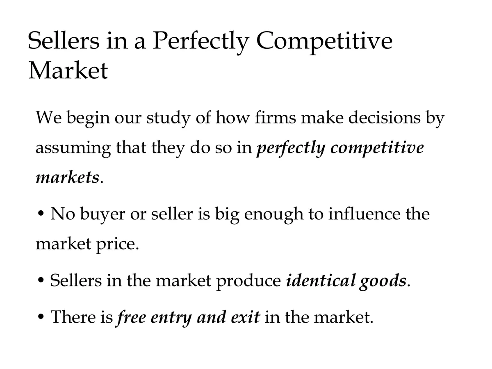
进入正题前先限定场地：我们假设企业在一个完全竞争市场（perfectly competitive market）里做决策。这个市场由三条假设刻画：
- 没有哪个买方或卖方大到能影响市场价格——大家都是价格的接受者。
- 所有卖方生产的产品完全相同（identical goods），买谁家的都一样。
- 厂商可以自由进入和退出（free entry and exit）。
三条缺一不可：第一条管定价权，第二条管产品差异，第三条管长期利润。今天后面所有「长期经济利润为零」的结论，全部压在这第三条上。
幻灯片原文 / 板书
Sellers in a Perfectly Competitive Market --- We begin our study of how firms make decisions by assuming that they do so in perfectly competitive markets. • No buyer or seller is big enough to influence the market price. • Sellers in the market produce identical goods. • There is free entry and exit in the market.
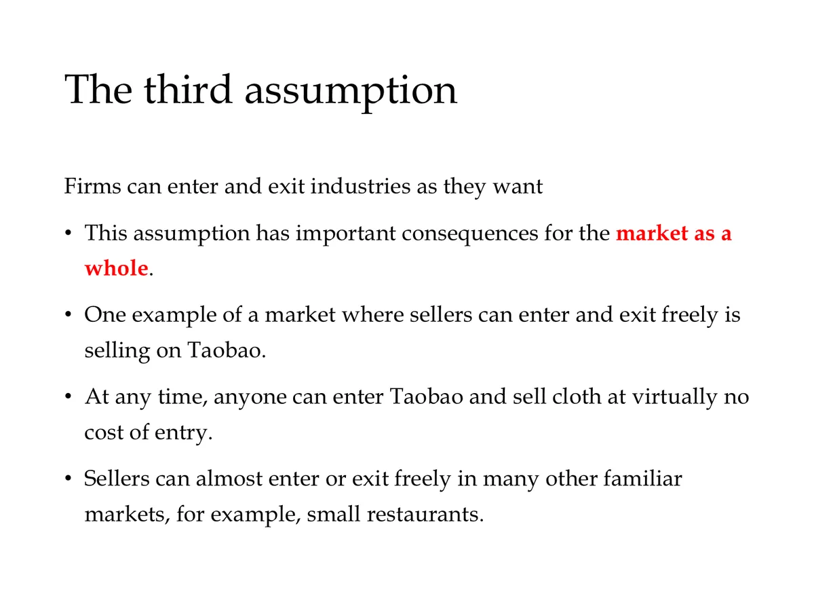
这一页专门拆第三条假设：企业想进就进、想出就出。
课件给了两个例子：
- 淘宝上卖布：任何人任何时候都能开个店卖布，进入成本几乎为零。
- 小餐馆：街边小饭馆开了关、关了开，没有谁需要审批。
为什么这条假设重要？因为它决定了市场整体的供给会随利润调整——有钱赚就有人进来，亏钱就有人走，价格因此被按住。
课堂提问（备注里老师问的）：能不能举出自由进入不成立的市场？出租车牌照、烟草专卖、医生执业资格、电信运营，都是靠法律或技术门槛把进入挡住了。记住这几个，第 12 讲讲垄断时会回来找它们。
幻灯片原文 / 板书
The third assumption --- Firms can enter and exit industries as they want This assumption has important consequences for the market as a whole. One example of a market where sellers can enter and exit freely is selling on Taobao. At any time, anyone can enter Taobao and sell cloth at virtually no cost of entry. Sellers can almost enter or exit freely in many other familiar markets, for example, small restaurants.
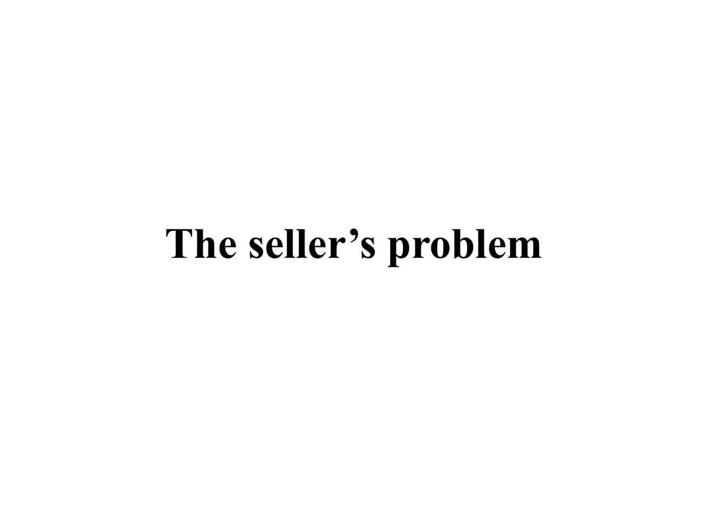
过渡页：The seller's problem（卖方问题）。
接下来三页用老师父亲开餐馆的故事，把「卖方问题」拆成三个可以分别回答的小问题。这不是闲话，而是本讲的结构图：三个问题对应后面三大块内容（生产技术、成本、收益）。
顺便说一句为什么用这么小的例子：一家小餐馆的账目，和一家上市公司年报里的科目，在经济学上是同一套东西——投入、产出、成本、收益。把小例子算清楚，大公司只是多几行。
幻灯片原文 / 板书
The seller’s problem
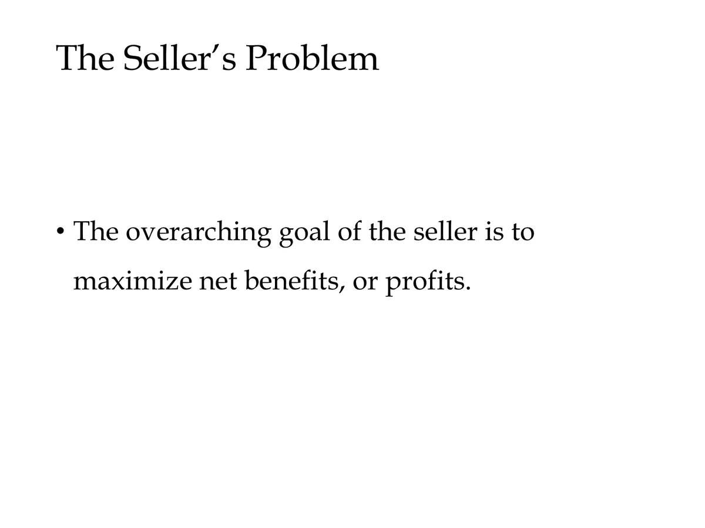
一句话给出卖方的总目标：最大化净收益，也就是利润（maximize net benefits, or profits）。
写成公式：
利润 = 总收益 − 总成本，即 π = TR − TC
两个提醒。第一，注意「净」字：经济学里从不把「卖了很多钱」当成功，只把「收入减去全部成本之后还剩」当成功。第二，这个「全部成本」在本讲最后一页会变得很锋利——它要扣掉机会成本。
还有一层：TR 和 TC 都随产量 Q 变，所以「最大化利润」实际上是对 Q 求最优——Q 太小浪费产能，Q 太大成本失控。
幻灯片原文 / 板书
The Seller’s Problem --- The overarching goal of the seller is to maximize net benefits, or profits.
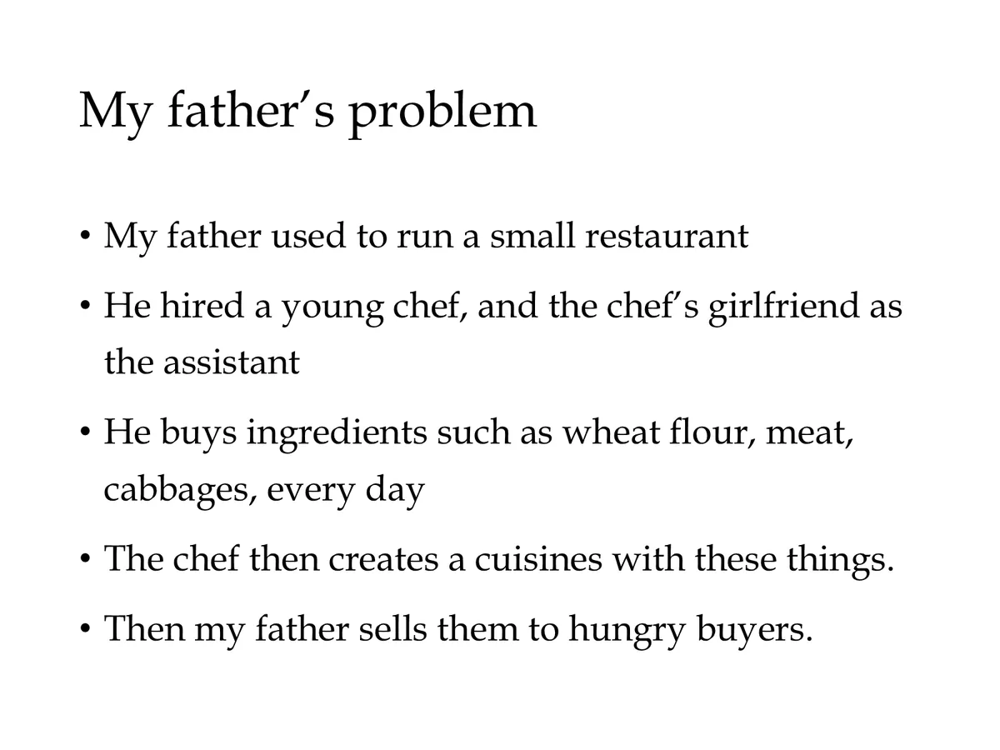
老师讲他父亲的故事：一家小餐馆。
- 雇了一个年轻厨师，还有厨师的女朋友当帮工；
- 每天买面粉、肉、白菜这些原料；
- 厨师把这些东西做成菜；
- 父亲把菜卖给饿着肚子的客人。
这个链条里已经藏着三个关键角色：投入品（面粉、肉、菜、厨师、灶台）、产出（菜）、买方（客人）。经济学要做的，是给这条链的每一环标上价格。
幻灯片原文 / 板书
My father’s problem --- My father used to run a small restaurant He hired a young chef, and the chef’s girlfriend as the assistant He buys ingredients such as wheat flour, meat, cabbages, every day The chef then creates a cuisines with these things. Then my father sells them to hungry buyers.
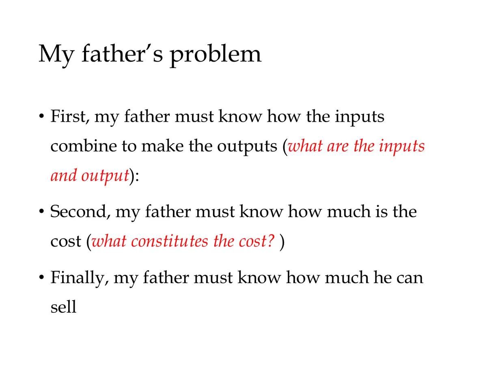
父亲必须回答三个问题，正好对应经济学的三块工具：
- 投入怎么组合成产出？——投入是什么、产出是什么（生产技术）。
- 成本是多少？——什么算成本、怎么算（成本理论）。
- 能卖多少钱？——价格与销量（收益理论）。
注意顺序：先技术、再成本、后收益。因为成本是从技术推出来的——你雇几个人、买几台机器，决定了你要花多少钱。
幻灯片原文 / 板书
My father’s problem --- First, my father must know how the inputs combine to make the outputs (what are the inputs and output): Second, my father must know how much is the cost (what constitutes the cost? ) Finally, my father must know how much he can sell
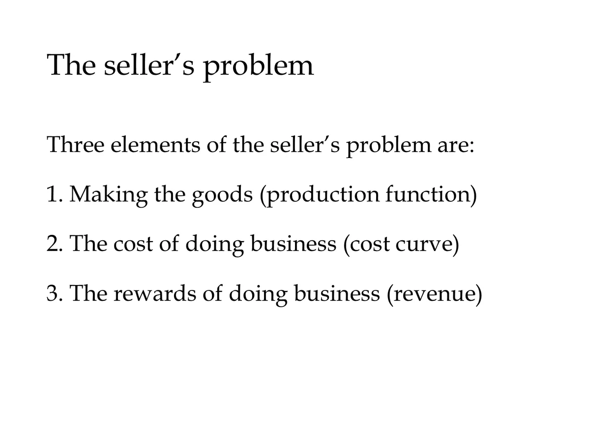
把上一页翻成标准说法，卖方问题有三个要素：
- Making the goods（把东西做出来）——用生产函数（production function）描述。
- The cost of doing business（做生意的代价）——用成本曲线（cost curve）描述。
- The rewards of doing business（做生意的回报）——用收益（revenue）描述。
本讲 P9–P19 讲第 1 块，P20–P26 讲第 2 块，P27–P33 讲第 3 块，然后把三块拼成利润最大化。现在开始第一块。
这里有个依赖顺序必须记牢：成本由技术推出，收益由市场给定，利润是前两者的差。写作业时如果先算收益再倒推成本，多半是把产量当成外生给定的——那就走错了。
幻灯片原文 / 板书
The seller’s problem --- Three elements of the seller’s problem are: 1. Making the goods (production function) 2. The cost of doing business (cost curve) 3. The rewards of doing business (revenue)
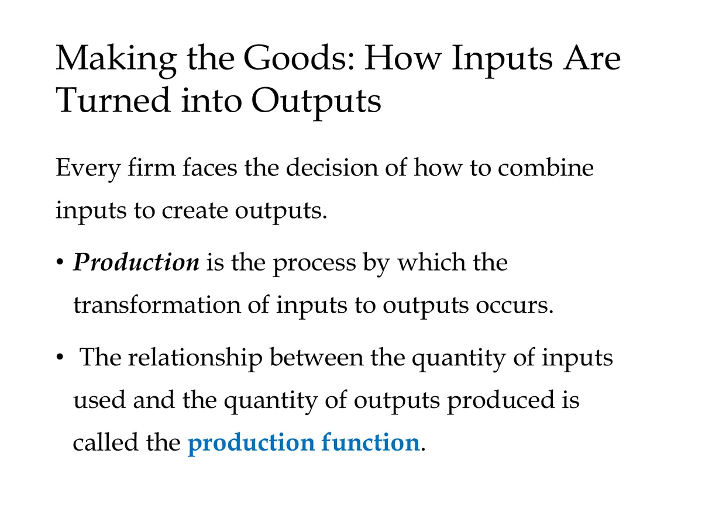
先给两个定义，务必分清：
- 生产（production）：把投入转化为产出的过程。
- 生产函数（production function）：投入数量与产出数量之间的关系。
所以生产函数不是一台机器，而是一张「配方表」：给我 3 个工人和 1 间厂房，我最多能做多少箱？它描述的是一种技术约束，与价格、与市场都无关。这一点很容易混——生产函数里没有美元。
补一句：它刻画的是技术上的最大可能产量，不是实际产量。管理混乱的企业可能做得更少，但经济学家关心的是那条边界。
幻灯片原文 / 板书
Making the Goods: How Inputs Are Turned into Outputs --- Every firm faces the decision of how to combine inputs to create outputs. Production is the process by which the transformation of inputs to outputs occurs. The relationship between the quantity of inputs used and the quantity of outputs produced is called the production function.
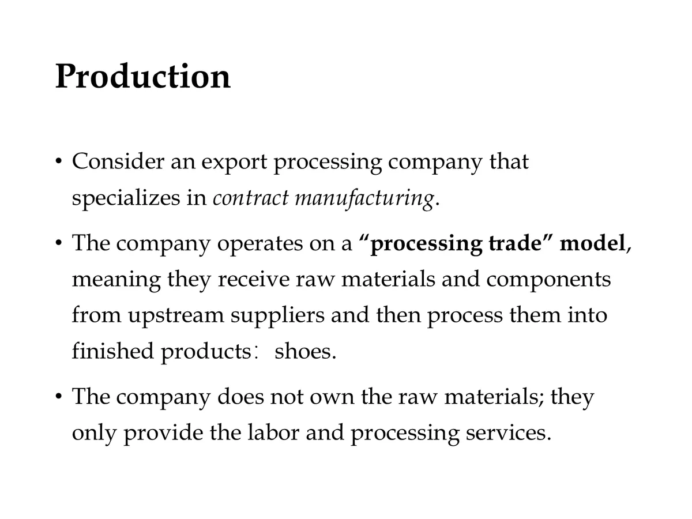
课件举了一家出口加工企业（export processing company），做代工（contract manufacturing）。
它采用加工贸易（processing trade）模式：上游供应商把原料和零部件送进来，它加工成成品——这里是鞋子。
关键细节：这家公司不拥有原料，它只提供劳动和加工服务。为什么强调这一点？因为成本结构完全不同：原料钱不归它出，它真正花钱买的只有工资、设备、厂房。这为后面「可变成本 vs 固定成本」的区分埋了伏笔。
幻灯片原文 / 板书
Production --- Consider an export processing company that specializes in contract manufacturing. The company operates on a “processing trade” model, meaning they receive raw materials and components from upstream suppliers and then process them into finished products：shoes. The company does not own the raw materials; they only provide the labor and processing services.
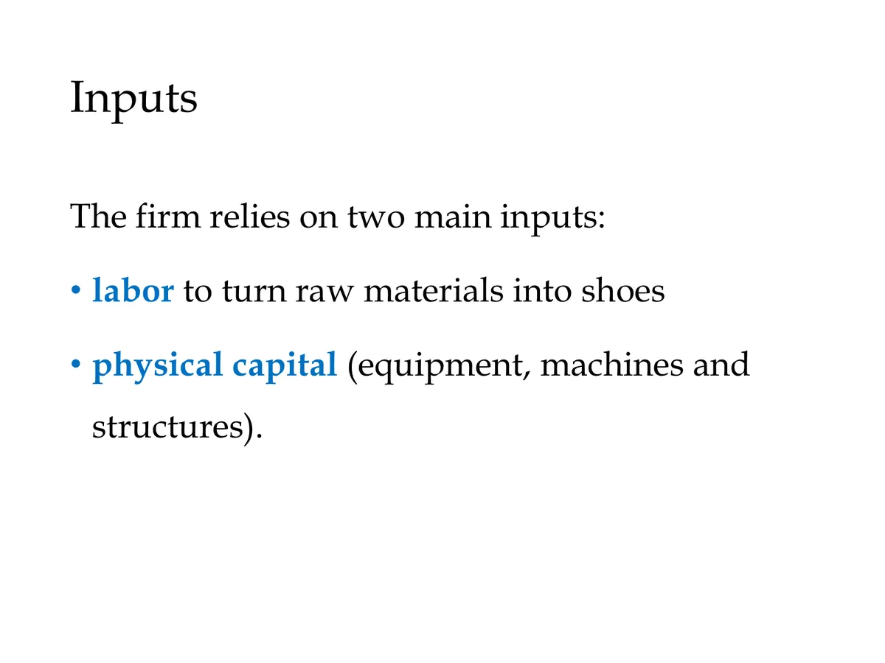
企业主要靠两种投入：
- 劳动（labor）：把原料变成鞋子的工人。
- 物质资本（physical capital）：设备、机器、厂房建筑。
经济学里的「资本」指生产出来的生产资料，不是钱。钱是金融资产，机器才是资本。这个用词差别在第 8 讲（资本市场）还会再考一次。
现实里两者的比例是可以选的：鞋厂可以多用缝纫机少用工人（资本密集），也可以反过来（劳动密集）。选哪一套取决于两种投入的相对价格——第 7 讲的等成本线就干这件事。
幻灯片原文 / 板书
Inputs --- The firm relies on two main inputs: labor to turn raw materials into shoes physical capital (equipment, machines and structures).
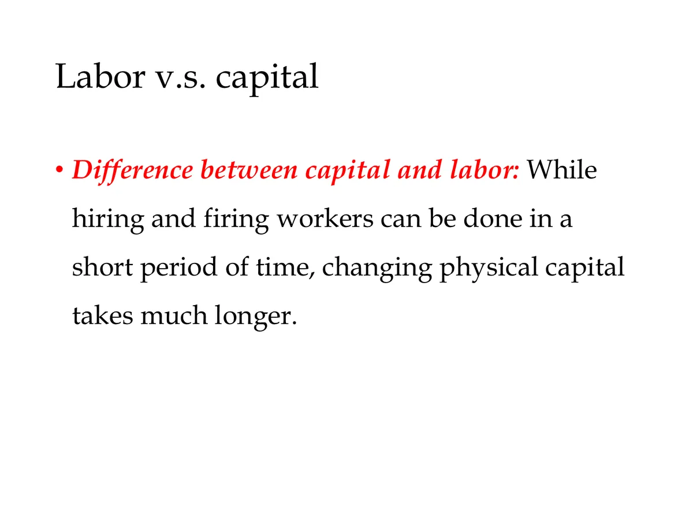
这一页讲劳动和资本最重要的差别：调整速度不一样。
- 雇人和裁人很快——今天招、明天上班；生意不好，下个月不续签就行。
- 改变物质资本很慢——买设备要下单、安装、调试；建厂房要盖一两年；卖掉旧设备还要找买家。
这个「快 vs 慢」的差别，就是下一頁短期与长期划分的全部依据。不是日历上的时间长短，而是「有没有哪一种投入还来不及调整」。
幻灯片原文 / 板书
Labor v.s. capital --- Difference between capital and labor: While hiring and firing workers can be done in a short period of time, changing physical capital takes much longer.
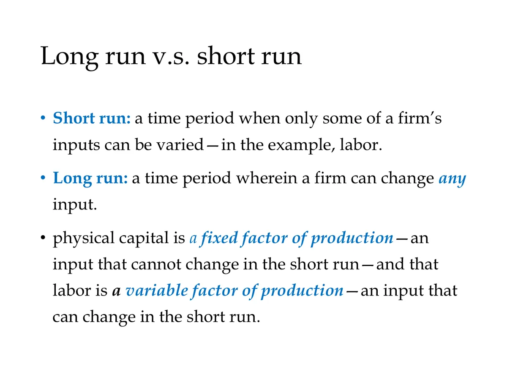
正式定义：
- 短期（short run）：只有部分投入可以变动的时间段——在这个例子里是劳动。
- 长期（long run）：所有投入都可以变动的时间段。
配套两个术语：
- 固定投入（fixed factor of production）：短期内改不了，这里指物质资本。
- 可变投入（variable factor of production）：短期内可以改，这里指劳动。
考点提醒：短期/长期是按能不能调整全部投入来分的，不是按「三个月」还是「三年」。一个只能改工人的作坊，哪怕过了五年，只要厂房还锁死，它就还在「短期」。
幻灯片原文 / 板书
Long run v.s. short run --- Short run: a time period when only some of a firm’s inputs can be varied—in the example, labor. Long run: a time period wherein a firm can change any input. physical capital is a fixed factor of production—an input that cannot change in the short run—and that labor is a variable factor of production—an input that can change in the short run.
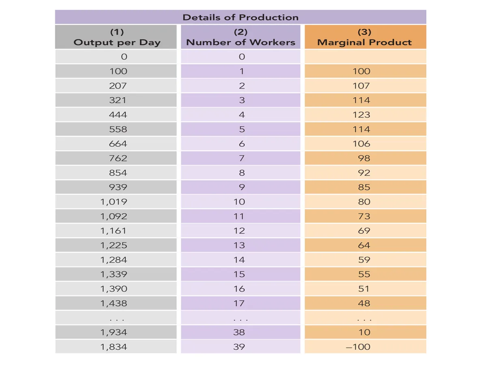
这一页是生产函数的数值表（Details of Production），后面所有成本数字都从它推出来。假设厂房固定，只增加工人：
| 日产量 Q | 工人数 L | 边际产量 MP = ΔQ/ΔL |
|---|---|---|
| 0 | 0 | — |
| 100 | 1 | 100 |
| 207 | 2 | 107 |
| 321 | 3 | 114 |
| 444 | 4 | 123 |
| 558 | 5 | 114 |
| 664 | 6 | 106 |
| 762 | 7 | 98 |
| 854 | 8 | 92 |
| 939 | 9 | 85 |
| 1,019 | 10 | 80 |
| 1,092 | 11 | 73 |
| 1,161 | 12 | 69 |
| 1,225 | 13 | 64 |
| 1,284 | 14 | 59 |
| 1,339 | 15 | 55 |
| 1,390 | 16 | 51 |
| 1,438 | 17 | 48 |
| … | … | … |
| 1,934 | 38 | 10 |
| 1,834 | 39 | −100 |
怎么读这张表：先看第 3 列。边际产量（marginal product）是「多雇一个工人，多产出多少箱」，算法是这一行产量减上一行产量。它先升（100→123，第 4 个工人达到顶点），再降（123→48），最后变成负数（第 39 个工人让总产量从 1,934 掉到 1,834）。三个阶段，就是接下来三页的主题。
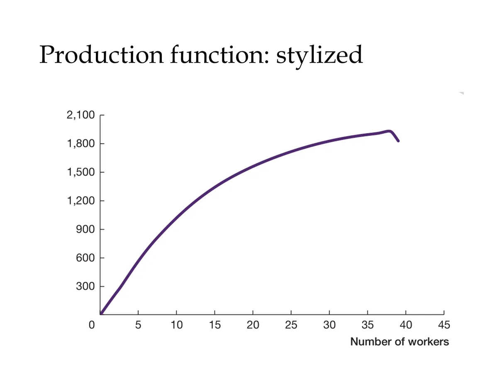
把上表画成图，横轴是工人数（0–45），纵轴是日产量（0–2,100 箱）。
这条曲线的斜率就是边际产量，所以：
- 最左边一小段向上弯（斜率变大）——前几个工人带来递增的边际产量；
- 中段越来越平（斜率变小）——边际产量递减，产量还在涨但涨得越来越慢；
- 最右端在 38 个工人附近掉头向下——再加人反而减产。
一条曲线，三段故事。这张「先陡后平再下弯」的形状是全讲的骨架，后面成本曲线的 U 形就是它照镜子照出来的：产量曲线越平，成本曲线越陡。
幻灯片原文 / 板书
Production function: stylized
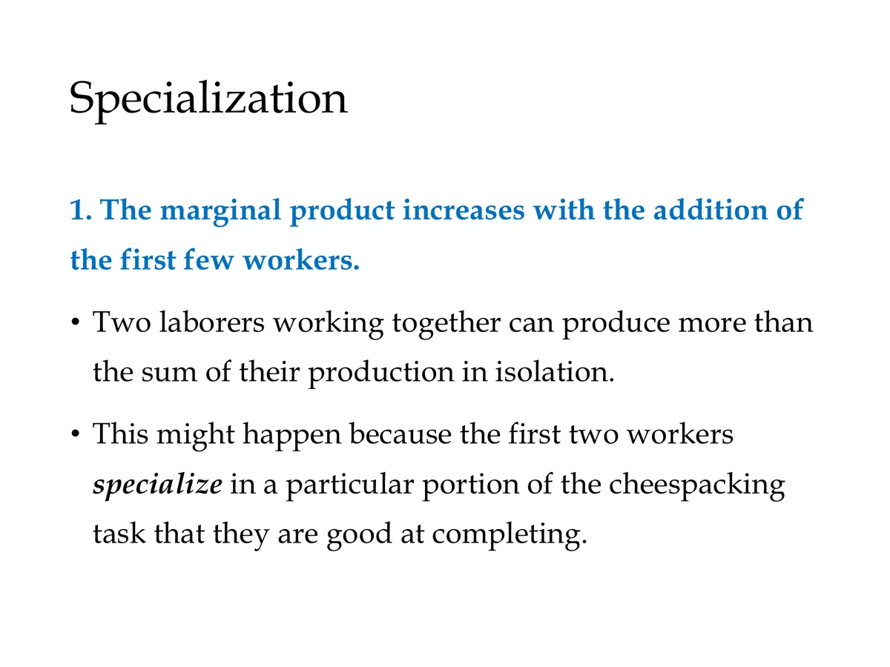
第一阶段：专业化（specialization）。
边际产量在最初几个工人加入时是上升的：两个工人一起干，产出大于两人各自单干的加总。
课件给的解释是装奶酪箱（cheesepacking）的例子：前两个工人各自专攻自己擅长的环节——一个负责折箱、一个负责封胶——配合起来比两人各干全套更快。
这背后是分工的逻辑：任务可以拆，拆开之后每人重复同一动作，熟练度上升、换工具的浪费消失。所以「1+1>2」在生产的早期是常态。
幻灯片原文 / 板书
Specialization --- 1. The marginal product increases with the addition of the first few workers. Two laborers working together can produce more than the sum of their production in isolation. This might happen because the first two workers specialize in a particular portion of the cheespacking task that they are good at completing.
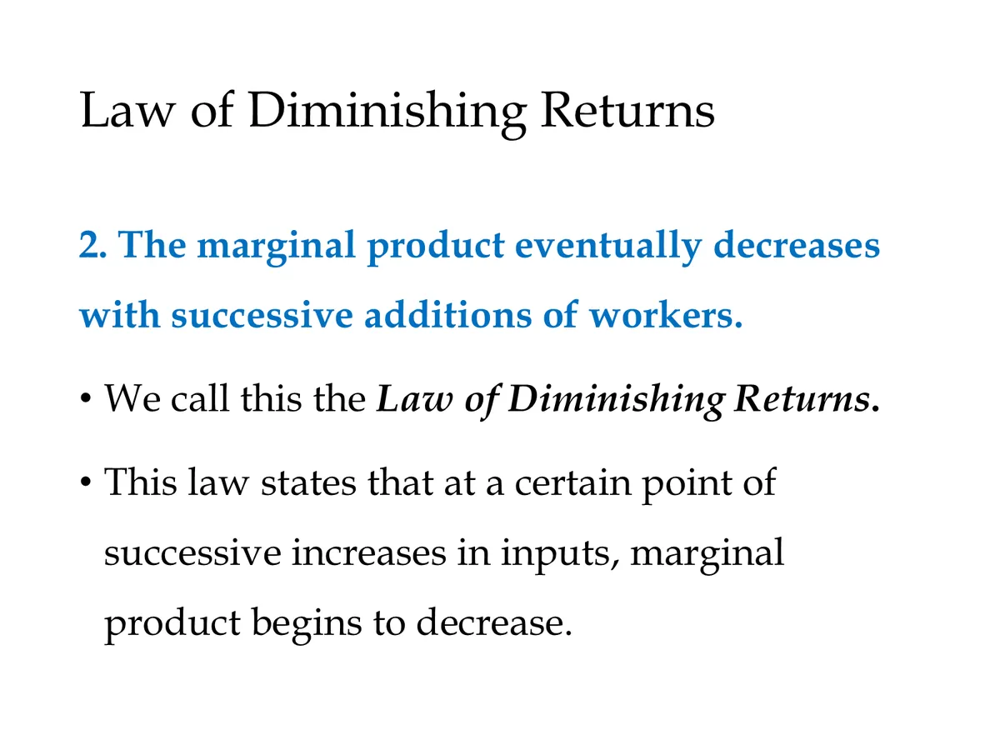
第二阶段，也是本讲最重要的规律：边际报酬递减规律（law of diminishing returns）。
在投入连续增加到某一点之后，边际产量开始下降。
注意措辞的精确性：
- 说的是边际产量下降，不是总产量下降——总产量还在增加，只是增加得越来越少。
- 说的是「某一点之后」——前面那段递增是允许存在的（上一页的专业化）。
所以这条规律不是「人越多越糟」，而是「人越多，多出来的那个人贡献越小」。
幻灯片原文 / 板书
Law of Diminishing Returns --- 2. The marginal product eventually decreases with successive additions of workers. We call this the Law of Diminishing Returns. This law states that at a certain point of successive increases in inputs, marginal product begins to decrease.
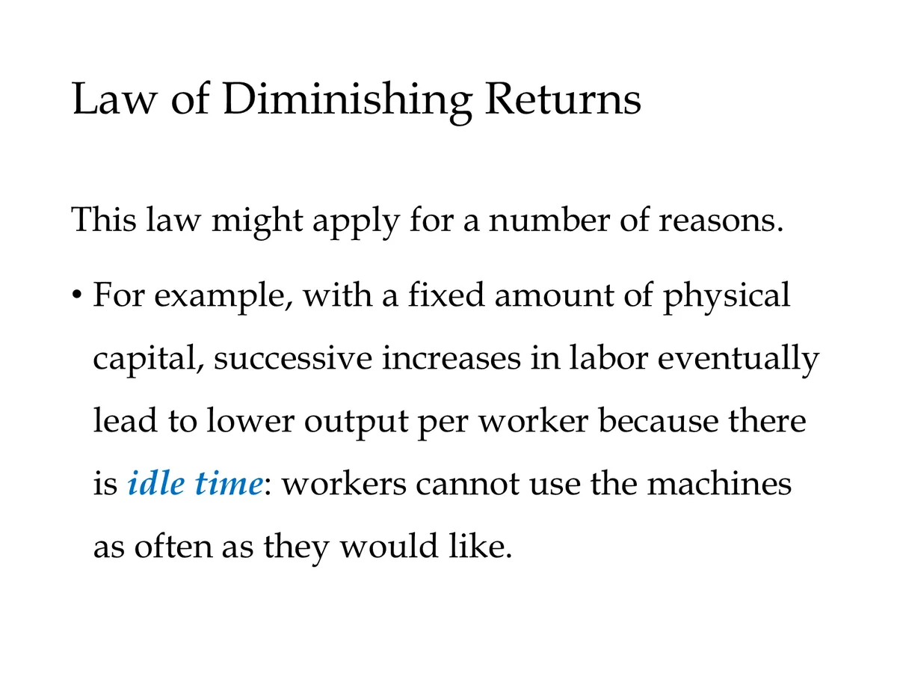
为什么会递减？课件给的机制是固定投入 + 闲置时间。
厂房、机器数量是固定的。工人越加越多，人均能分到的机器使用时间就越少——工人没法想用机器就用，只能排队等。等待的时间就是闲置，闲置拉低了每个人的产出。
这就是「固定投入」这四个字的分量：真正稀缺的不是人，是能和人配合的机器。只要这一项卡住，边际产量迟早往下走。
幻灯片原文 / 板书
Law of Diminishing Returns --- This law might apply for a number of reasons. For example, with a fixed amount of physical capital, successive increases in labor eventually lead to lower output per worker because there is idle time: workers cannot use the machines as often as they would like.
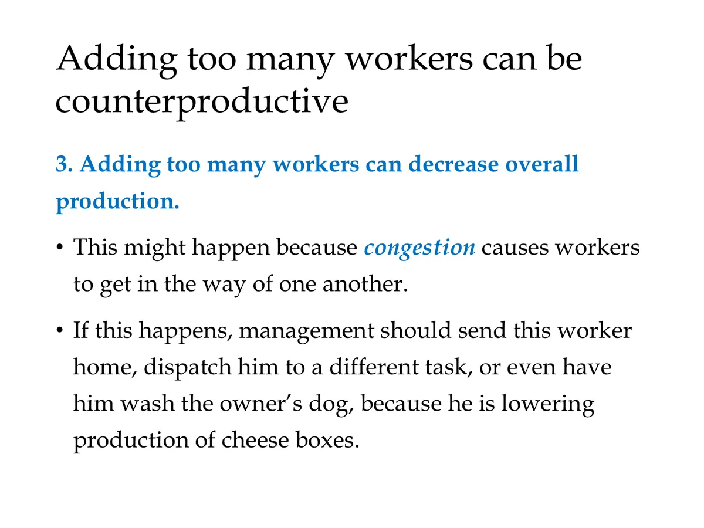
第三阶段：人太多会起反作用。
课件说得很直白：加太多工人会降低总产量，原因是拥挤（congestion）——工人互相挡道、互相等，反而更慢。回到表里：第 38 个工人产出 1,934 箱，第 39 个工人一来，总产量跌到 1,834 箱，边际产量 −100。
课件还开玩笑说，这时候老板该把这个人打发回家、调去干别的活，甚至让他去给老板遛狗——因为他正在减少奶酪箱的产量。
这里的考点：边际产量为负时，理性厂商一定不会雇这个人，哪怕工资为零也不雇，因为他让总产出变少、成本变高。
幻灯片原文 / 板书
Adding too many workers can be counterproductive --- 3. Adding too many workers can decrease overall production. This might happen because congestion causes workers to get in the way of one another. If this happens, management should send this worker home, dispatch him to a different task, or even have him wash the owner’s dog, because he is lowering production of cheese boxes.
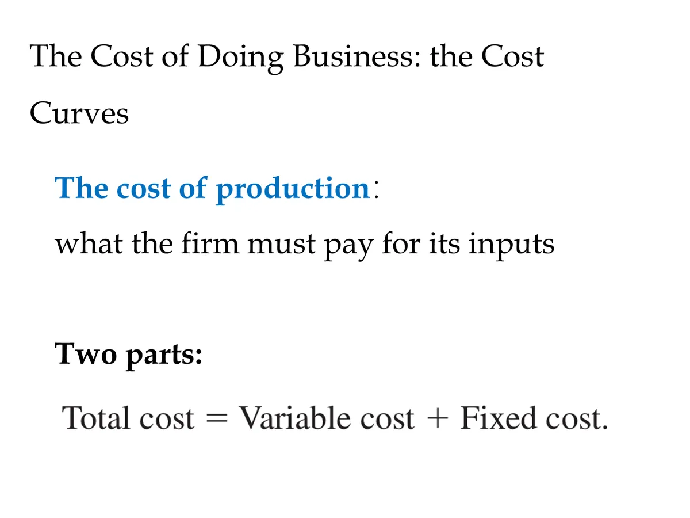
第一块（生产）讲完，进入第二块：成本曲线（the cost curves）。
成本的定义很简单：企业为投入所支付的代价。但它要分两部分——一部分随产量变，一部分不随产量变。
为什么必须分？因为两者的决策含义完全不同：可变成本是「多做就多花」的部分；固定成本是「做不做都要花」的部分。后面判断该不该停业，比的正是收入和哪一部分。
幻灯片原文 / 板书
The Cost of Doing Business: the Cost Curves --- The cost of production： what the firm must pay for its inputs Two parts:
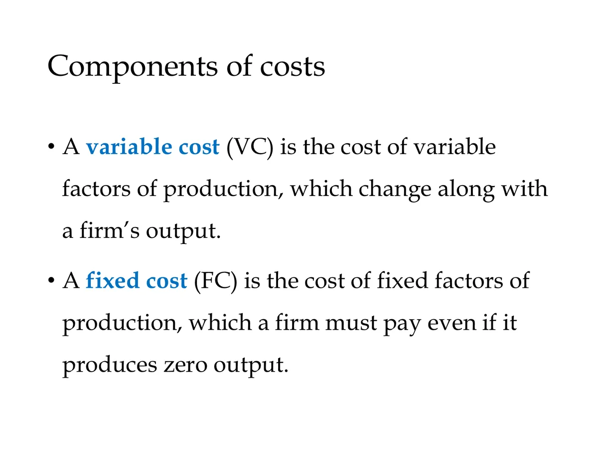
两种成本：
- 可变成本（variable cost, VC）：可变投入的成本，随产量变化。这里就是工资：每雇一个工人付 $72，雇 L 个就是 72L。
- 固定成本（fixed cost, FC）：固定投入的成本，即使产量为零也必须付。这里是厂房 $200。
注意 FC 的定义里那句「produce zero output」：不生产也要付。这就是它和 VC 的分水岭，也是后面「沉没成本」讨论的起点。
用数字压实这两条：VC = 72 × L，FC = 200（Q = 0 也照付 $200），于是 TC = 72L + 200。这条式子只对短期成立——长期里厂房可以换，$200 也就不再固定了。
幻灯片原文 / 板书
Components of costs --- A variable cost (VC) is the cost of variable factors of production, which change along with a firm’s output. A fixed cost (FC) is the cost of fixed factors of production, which a firm must pay even if it produces zero output.
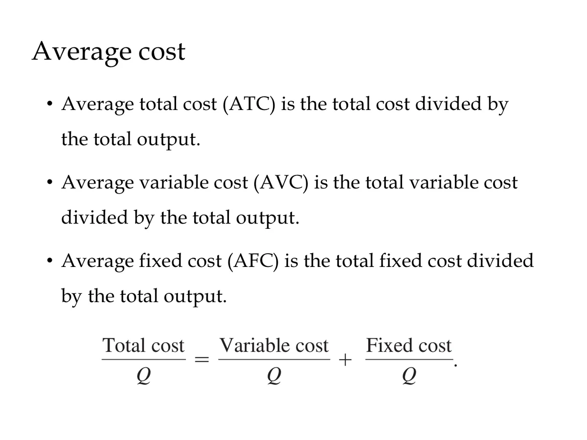
三种平均成本，都是「总量除以产量」：
- 平均总成本 ATC = TC / Q
- 平均可变成本 AVC = VC / Q
- 平均固定成本 AFC = FC / Q
三者恒等：ATC = AVC + AFC。
用表里的数字验一下（Q = 1,225）：ATC = 1,136/1,225 = $0.93，AVC = 936/1,225 = $0.76，AFC = 200/1,225 = $0.16，0.76 + 0.16 = 0.92，四舍五入对得上。
AFC 这一项常被忽略，但它解释了 ATC 与 AVC 的形状差异：AFC 随产量单调下降，所以 ATC 在低产量段被它拖着快速下滑；产量足够大以后 AFC 很小，ATC 与 AVC 几乎重合，U 形右手边就完全由 AVC 决定。
还要注意分母：Q 很小时 AFC 会非常大（Q = 100 时是 $2.00），所以 ATC 的起点远高于 AVC——这就是 P25 图上绿线左端高高翘起、而紫线只是轻微上翘的原因。
幻灯片原文 / 板书
Average cost --- Average total cost (ATC) is the total cost divided by the total output. Average variable cost (AVC) is the total variable cost divided by the total output. Average fixed cost (AFC) is the total fixed cost divided by the total output.
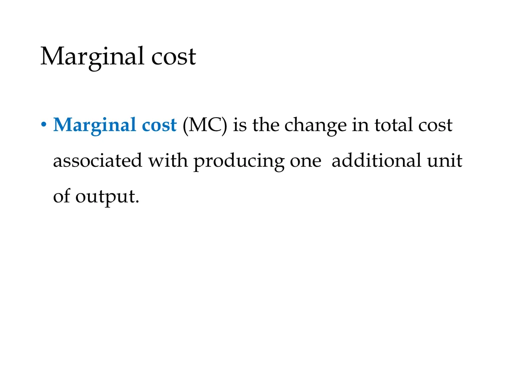
边际成本（marginal cost, MC）：多生产一单位产出所引起的总成本变化。
MC = ΔTC / ΔQ
在只有劳动可变的世界里，它有一个很漂亮的算法：多雇一个工人花 $72，这个工人多做 MP 箱，所以
MC = 工资 / 边际产量 = 72 / MP
验算：第 13 个工人多做 64 箱，MC = 72/64 = $1.13；第 4 个工人多做 123 箱，MC = 72/123 = $0.59。
这条式子说明一件重要的事：边际产量递增的地方，边际成本递减。生产函数和成本曲线是同一枚硬币的两面。
幻灯片原文 / 板书
Marginal cost --- Marginal cost (MC) is the change in total cost associated with producing one additional unit of output.
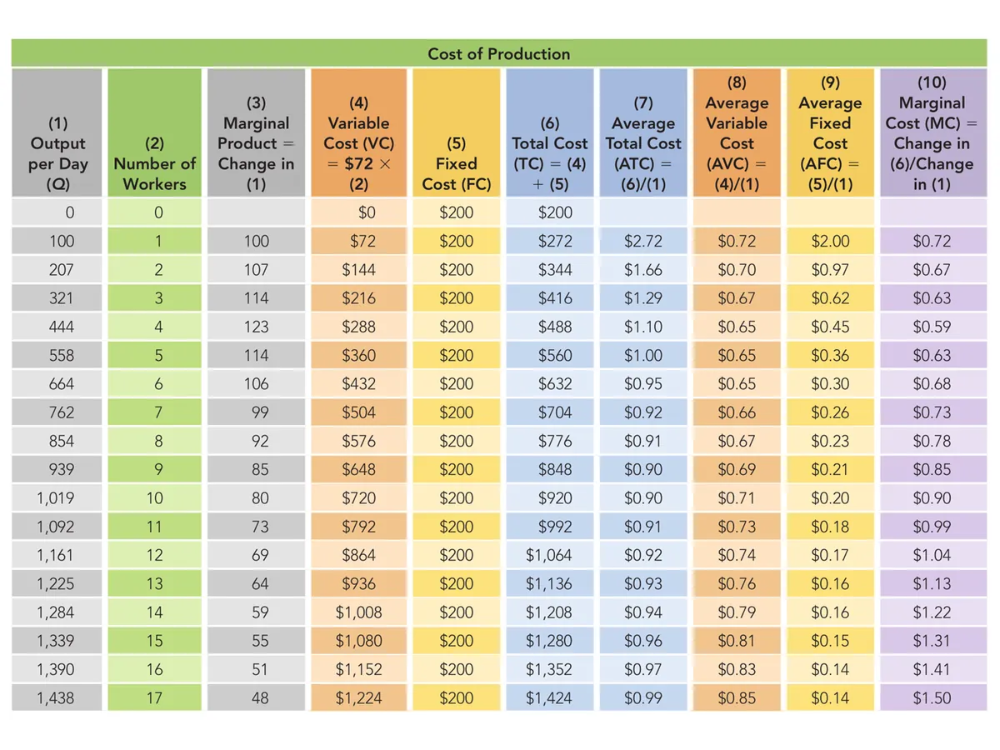
这一页把成本和产量并到一张表里（Cost of Production），是本讲所有数字的来源。工资 $72/人，固定成本 $200：
| (1) Q | (2) L | (3) MP | (4) VC | (5) FC | (6) TC | (7) ATC | (8) AVC | (9) AFC | (10) MC |
|---|---|---|---|---|---|---|---|---|---|
| 0 | 0 | — | $0 | $200 | $200 | — | — | — | — |
| 100 | 1 | 100 | $72 | $200 | $272 | $2.72 | $0.72 | $2.00 | $0.72 |
| 207 | 2 | 107 | $144 | $200 | $344 | $1.66 | $0.70 | $0.97 | $0.67 |
| 321 | 3 | 114 | $216 | $200 | $416 | $1.29 | $0.67 | $0.62 | $0.63 |
| 444 | 4 | 123 | $288 | $200 | $488 | $1.10 | $0.65 | $0.45 | $0.59 |
| 558 | 5 | 114 | $360 | $200 | $560 | $1.00 | $0.65 | $0.36 | $0.63 |
| 664 | 6 | 106 | $432 | $200 | $632 | $0.95 | $0.65 | $0.30 | $0.68 |
| 762 | 7 | 98 | $504 | $200 | $704 | $0.92 | $0.66 | $0.26 | $0.73 |
| 854 | 8 | 92 | $576 | $200 | $776 | $0.91 | $0.67 | $0.23 | $0.78 |
| 939 | 9 | 85 | $648 | $200 | $848 | $0.90 | $0.69 | $0.21 | $0.85 |
| 1,019 | 10 | 80 | $720 | $200 | $920 | $0.90 | $0.71 | $0.20 | $0.90 |
| 1,092 | 11 | 73 | $792 | $200 | $992 | $0.91 | $0.73 | $0.18 | $0.99 |
| 1,161 | 12 | 69 | $864 | $200 | $1,064 | $0.92 | $0.74 | $0.17 | $1.04 |
| 1,225 | 13 | 64 | $936 | $200 | $1,136 | $0.93 | $0.76 | $0.16 | $1.13 |
| 1,284 | 14 | 59 | $1,008 | $200 | $1,208 | $0.94 | $0.79 | $0.16 | $1.22 |
| 1,339 | 15 | 55 | $1,080 | $200 | $1,280 | $0.96 | $0.81 | $0.15 | $1.31 |
| 1,390 | 16 | 51 | $1,152 | $200 | $1,352 | $0.97 | $0.83 | $0.14 | $1.41 |
| 1,438 | 17 | 48 | $1,224 | $200 | $1,424 | $0.99 | $0.85 | $0.14 | $1.50 |
四处值得停一下：
- (3)→(10) 的镜像：MP 最大（123）时 MC 最小（$0.59）；MP 一路下滑，MC 就一路爬升。
- MC 的形状是 U：先降到 $0.59，再升到 $1.50。
- ATC 最低是 $0.90（Q = 939 与 1,019 两处），AVC 最低是 $0.65（第 4–6 个工人）。
- AFC 单调下降：从 $2.00 掉到 $0.14，永远不回头。
读表顺序建议：先用 (2) 和 (1) 建立产量概念，再用 (4)(5) 合成 (6)，最后由 (6)(1) 得 (7)(8)(9)。考试常给你一半的列让你补另一半，算 (10) 时用相邻两行 TC 之差除以产量之差最快。
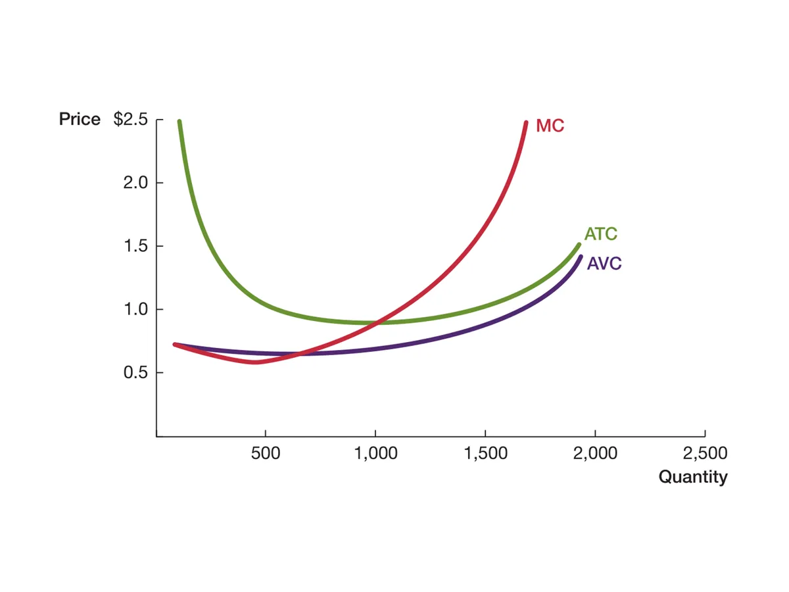
把表画成图，横轴产量（0–2,500 箱），纵轴价格/成本（$0–2.5）。三条曲线：
- MC（红）：最陡的 U 形，最低点约 $0.59、在 Q≈500 附近，之后急速上冲。
- ATC（绿）：宽 U 形，最低点 $0.90、在 Q≈1,000 附近。
- AVC（紫）：更平的 U 形，最低点 $0.65、在 Q≈600 附近。
读图的三个要点：
- ATC 永远在 AVC 上面，两者的垂直距离就是 AFC，随产量增大而收窄（$2.00 → $0.14）。
- 三条曲线都先降后升，U 形的左手边来自固定成本被摊薄，右手边来自边际报酬递减。
- MC 穿过 AVC 和 ATC 的最低点——下一首要回答的就是这个「为什么」。
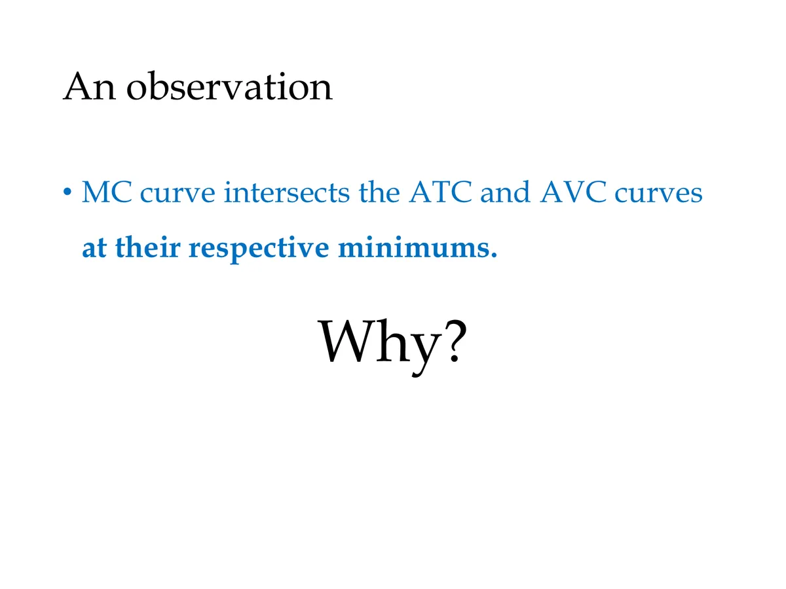
这一页只提一个观察，加一个「Why?」：
MC 曲线在 ATC 和 AVC 各自的最低点穿过它们。
用平均分的类比想最快：你的边际成绩（这次考试）如果低于平均分，平均分被拉低；如果高于平均分，平均分被拉高。所以平均分最低的那一刻，边际成绩正好等于平均分。
换成成本语言：多生产一箱的成本（MC）低于当前平均成本（ATC）时，平均值被拉下来；高于时被拉上去。两者相等的那一点，就是平均值的最低点。这个论证不依赖具体数字，任何 U 形平均曲线都成立。
幻灯片原文 / 板书
An observation --- MC curve intersects the ATC and AVC curves at their respective minimums. Why?
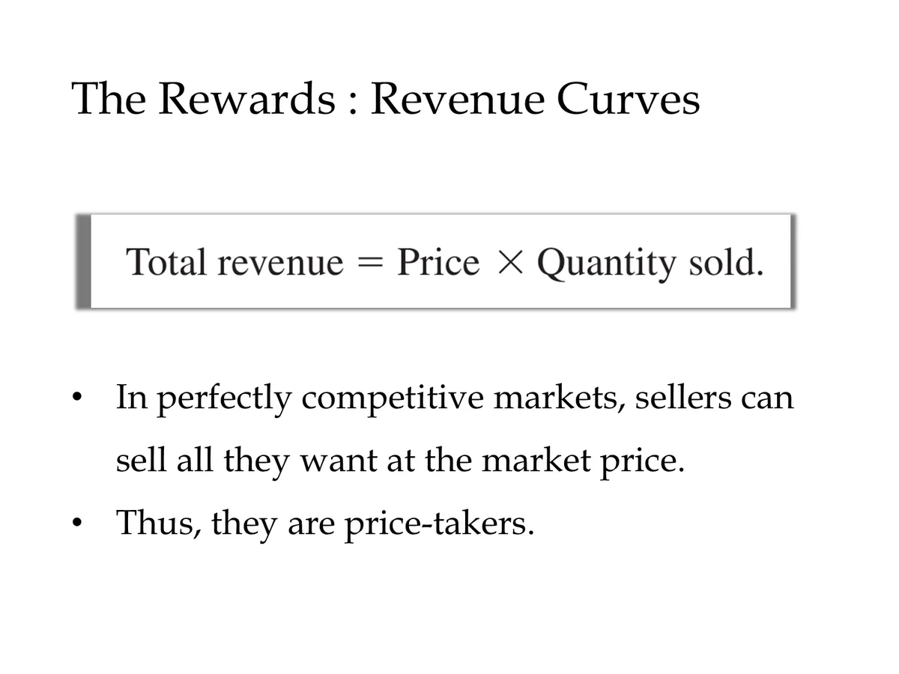
第三块：收益（revenue）。
在完全竞争市场里，卖方想卖多少就能卖多少，价格都是市场价——所以他们是价格接受者（price-takers）。
由此得到两条极简的公式：
- 总收益 TR = P × Q
- 平均收益 AR = TR / Q = P
第二行值得多看两眼：不管你卖 1 箱还是 1,000 箱，每箱的平均收益都等于市场价格。价格是给定的常数，不随你的销量下降。这正是「完全竞争」与「垄断」的分水岭。
幻灯片原文 / 板书
The Rewards : Revenue Curves --- In perfectly competitive markets, sellers can sell all they want at the market price. Thus, they are price-takers.
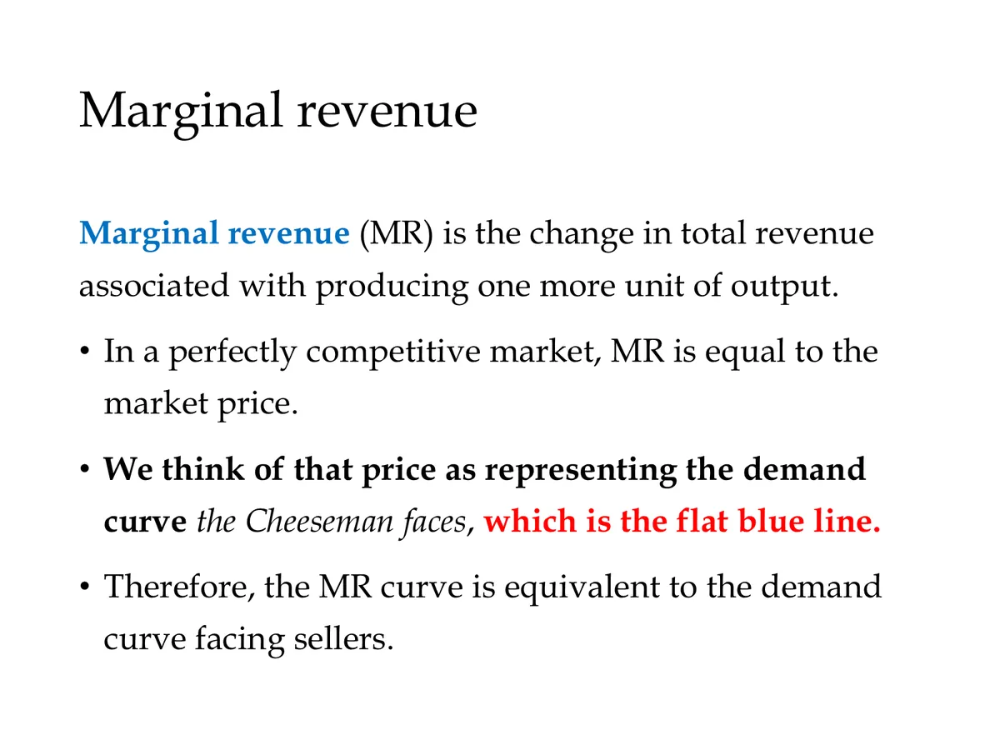
边际收益（marginal revenue, MR）：多卖一单位产出所带来的总收益变化。
MR = ΔTR / ΔQ
在完全竞争市场里，MR 就等于市场价格：多卖一箱，收入就多 P，一分不多一分不少。
课件还补了一句关键的图形语言：这个价格可以看成这家企业面对的需求曲线——一条水平线（flat blue line），高度就是 P。所以对竞争厂商来说：
MR 曲线 = 它面对的需求曲线 = 一条水平线
需求曲线水平，意味着它降一点价就白送钱（本来能按市价卖完），涨一点价就一件也卖不掉。所以「接受市价」不是被迫，而是最优。
幻灯片原文 / 板书
Marginal revenue --- Marginal revenue (MR) is the change in total revenue associated with producing one more unit of output. In a perfectly competitive market, MR is equal to the market price. We think of that price as representing the demand curve the Cheeseman faces, which is the flat blue line. Therefore, the MR curve is equivalent to the demand curve facing sellers.
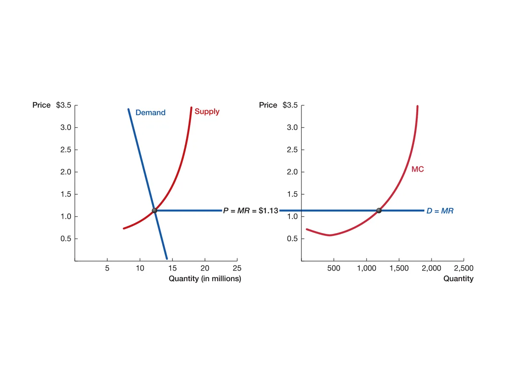
这一页左右并置两张图，是全讲最常用的「市场 vs 厂商」对照。
- 左图（市场）：横轴数量以百万计（0–25），纵轴价格 $0–3.5。需求（蓝）向下、供给（红）向上，交点决定市场价 P = $1.13。价格一旦定下，单个厂商只能接受。
- 右图（厂商）：横轴是这家厂自己的产量（0–2,500 箱），纵轴价格。水平的蓝线标着 D = MR，高度 $1.13；红的是它的 MC 曲线。
两条线相交处就是它的产量：Q = 1,225 箱（对应表里第 13 个工人）。注意左右两图横轴单位差了几万倍——这是初学时最容易看错的地方。
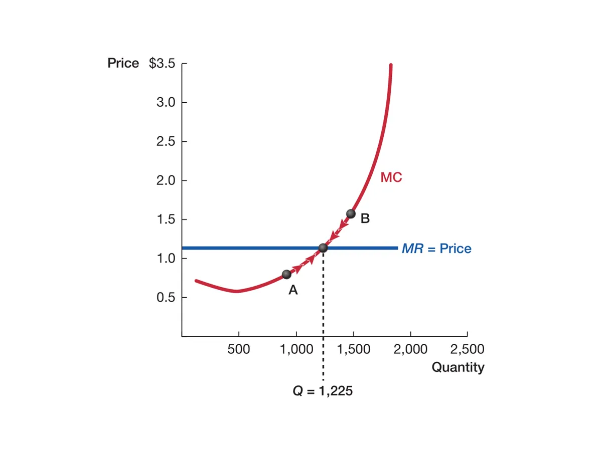
为什么交在 1,225 而不是别处？这一页用边际推理把答案走一遍。
- 在 A 点（Q≈950），MC ≈ $0.78 小于 MR = $1.13：多做一箱赚 $0.35，所以应该扩产。
- 在 B 点（Q≈1,500），MC ≈ $1.60 大于 MR：多做一箱倒亏 $0.47，所以应该减产。
两个箭头都指向中间，直到 MC = MR，产量停在 1,225。
结论写成规则：
利润最大化条件：MR = MC（竞争市场里就是 P = MC）
直觉一句话：只要「多做一件的收益」还大于「多做一件的成本」，就该继续做；做到两者相等，再无改进空间。
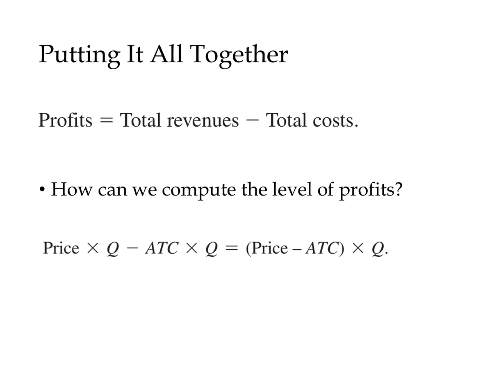
三块拼起来，算利润的步骤只有三步：
- 由 MR = MC 定产量 Q\*；
- 算 TR = P × Q\ 与 TC = ATC × Q\；
- 相减：π = TR − TC = (P − ATC) × Q\*。
用数字走一遍（P = $1.13，Q\* = 1,225）：TR = 1.13 × 1,225 = $1,384，TC = $1,136，利润 ≈ $248。
第 3 步的写法最好用：(P − ATC) × Q，它是「每箱赚多少 × 卖了多少箱」，对应图上就是一个矩形。
为什么不用表里「利润最大」那一行直接找？因为表只列了整数个工人的离散点，MR = MC 给的是连续意义上的最优；两者在此恰好落在同一行（第 13 个工人），这组数字是教材特意配好的。
注意这个 $248 是经济利润的雏形——它还没扣掉老板自己的时间，P70 会把那一块补上。
幻灯片原文 / 板书
Putting It All Together --- How can we compute the level of profits?
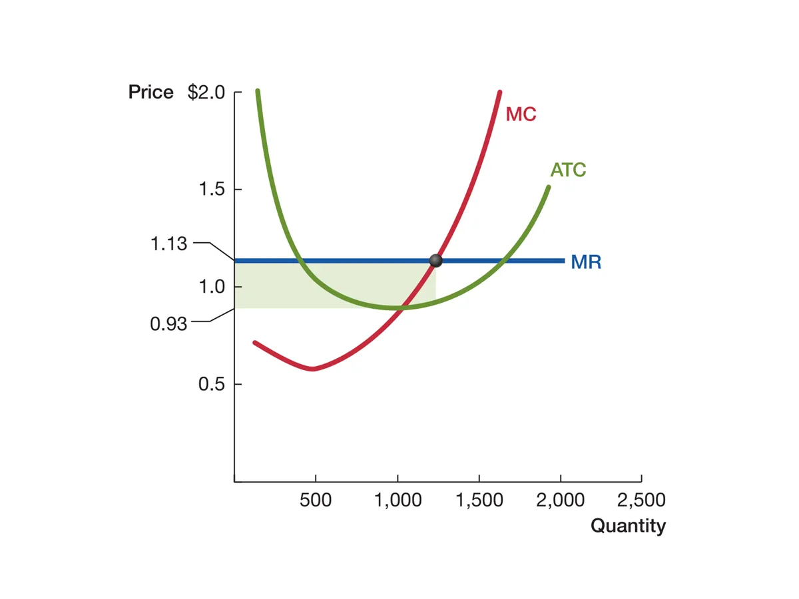
这一页就是那个矩形。
坐标系是厂商视角：横轴 0–2,500 箱，纵轴价格 $0.5–2.0。水平的 MR 线在 $1.13，绿色 ATC 曲线在 Q = 1,225 处的高度是 $0.93。
于是：
- 矩形宽 = 1,225 箱；
- 矩形高 = 1.13 − 0.93 = $0.20（每箱利润）；
- 面积 = 0.20 × 1,225 ≈ $245（浅绿阴影）。
读图口诀：矩形的上边是价格线，下边是 ATC。价格线在 ATC 之上是利润矩形，翻到下面就是亏损矩形——P41 的 S 点正是后者。
还有个细节：矩形的高度（$0.20）远小于宽度（1,225 箱），说明利润率只有 0.20/1.13 ≈ 18%。完全竞争行业里的利润空间通常就这么薄。
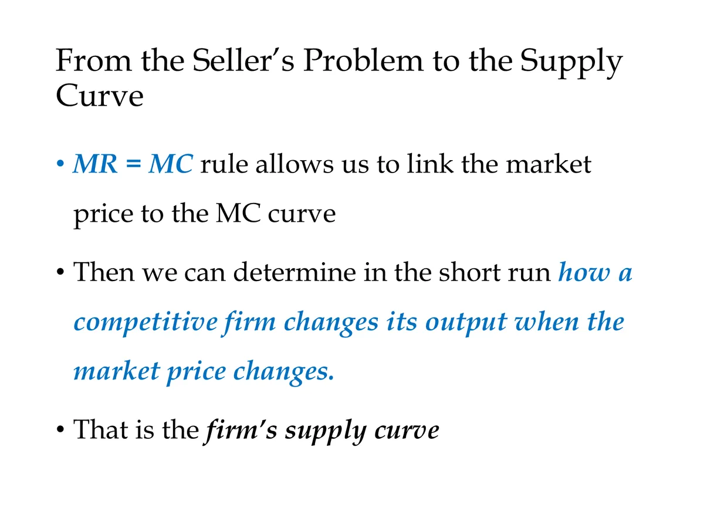
把 MR = MC 翻译成供给曲线。
逻辑链是这样的：市场价变 → 厂商的 MR 线上下平移 → 它与 MC 的新交点给出新产量。所以
MC 曲线本身就在告诉我们：每一个价格下企业愿意供应多少。
这就是厂商的供给曲线。价格从 $1.13 涨到 $1.50，交点沿 MC 向右上移，产量从 1,225 增到约 1,600；价格跌到 $0.90，产量退到 1,000 附近。
一句话：供给曲线不是画出来的，是从 MC 推出来的。
幻灯片原文 / 板书
MR = MC rule allows us to link the market price to the MC curve Then we can determine in the short run how a competitive firm changes its output when the market price changes. That is the firm’s supply curve --- From the Seller’s Problem to the Supply Curve
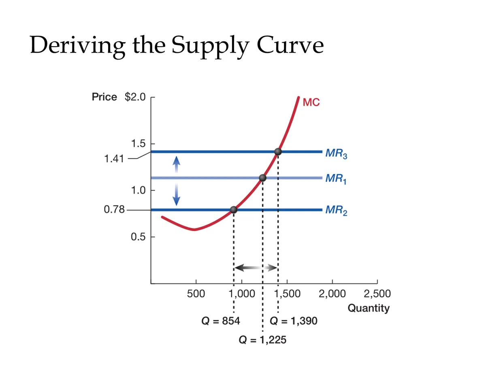
过渡页：Deriving the Supply Curve（推导供给曲线）。
接下来几页要做两件事：把「MC 就是供给曲线」这个结论坐实（包括它在低价格处会断掉，见 P43），以及用一个新工具——供给弹性——描述这条曲线有多敏感。
幻灯片原文 / 板书
Deriving the Supply Curve
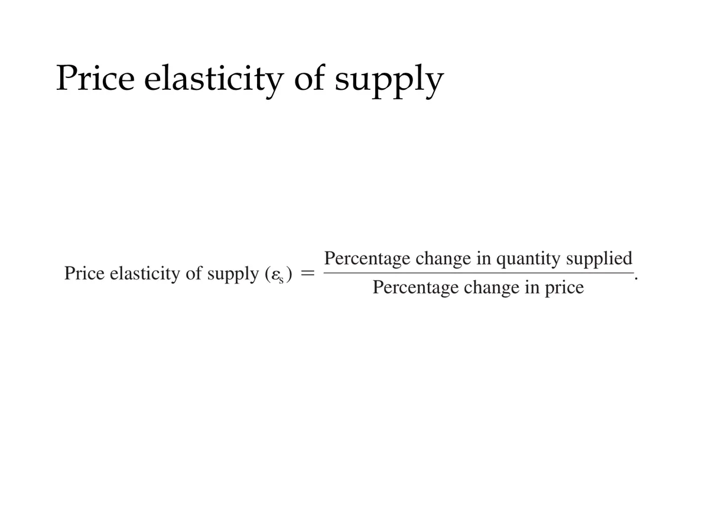
供给价格弹性（price elasticity of supply）：供给量对价格变化的敏感程度。
εS = 供给量变动百分比 / 价格变动百分比
和需求弹性同一套算法，只是把 Q 换成供给量。它的绝对值越大，供给越敏感。
两个提醒：一是供给弹性通常为正（价格涨、供给增），所以只看大小不看符号；二是它是百分比之比，与单位无关，因此可以跨行业比较。
三个基准值先记住：εS = ∞（完全弹性，水平线）、εS = 1（单位弹性，同比例变动）、εS = 0（完全无弹性，垂直线）。接下来三页各画一个。
幻灯片原文 / 板书
Price elasticity of supply
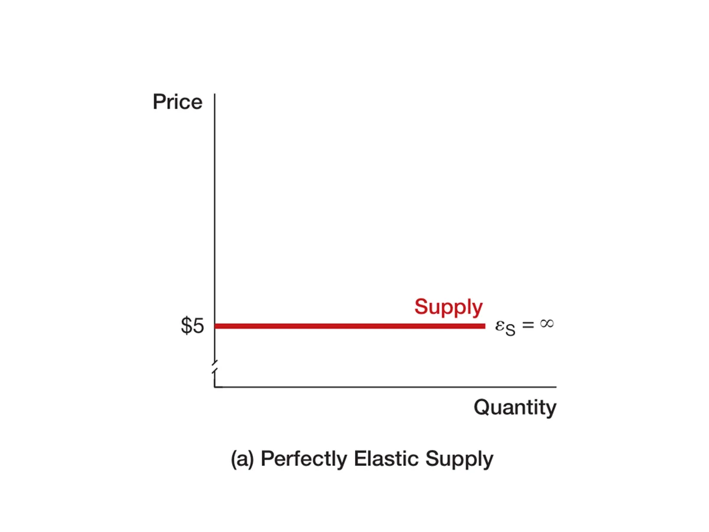
(a) 完全弹性供给（perfectly elastic supply）。
图里只有一条水平的红线，高度 $5，旁边标着 εS = ∞。
含义：价格只要低于 $5，一件都不卖；价格等于 $5，企业愿意卖任意数量。价格变动百分比为 0，供给量却能无限变，所以弹性无穷大。
现实对应：存在大量同质产能、且进入成本极低的行业。回看 P29 右图那条水平的 D = MR，它其实就是单个竞争厂商面对的「完全弹性」需求；而这里讲的是整条供给的水平形态，两者别混。
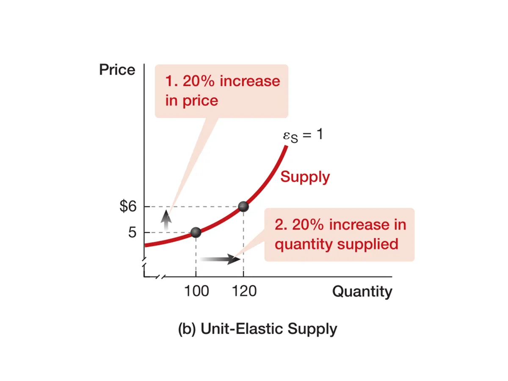
(b) 单位弹性供给（unit-elastic supply）。
图上是一条向上弯的供给曲线，标 εS = 1。课件用两个标注把算法演给你看：
- 价格从 $5 涨到 $6，涨 20%；
- 供给量从 100 涨到 120，也涨 20%。
20% / 20% = 1，所以是单位弹性。
为什么画成曲线而不是直线？因为弹性是百分比之比，在普通坐标里只有过原点的直线才处处弹性为 1。做题时只要会算 (ΔQ/Q)/(ΔP/P)，不必纠结图形。
顺带一个判读技巧：过原点的直线供给，弹性恒等于 1，几何上一眼就能认出来，不必算百分比。
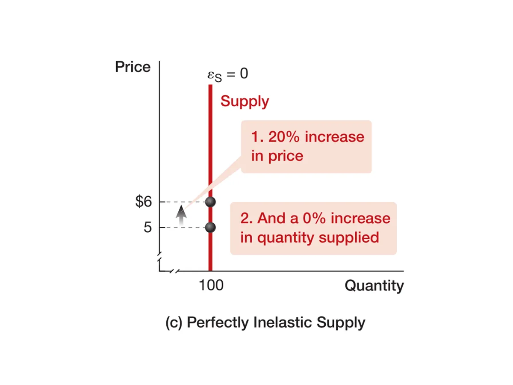
(c) 完全无弹性供给（perfectly inelastic supply）。
图上是一条垂直的红线，钉在 Q = 100，标 εS = 0。课件标注：
- 价格从 $5 涨到 $6，涨 20%；
- 供给量增加 0%，还是 100。
价格怎么变，供给量都不动。现实对应：短期内供给量已经锁死的东西——音乐厅的座位、当季的西瓜、已经卖完的演唱会门票。
三张图并排记：水平 = ∞，过原点直线 = 1，垂直 = 0。
为什么会有完全无弹性的供给？因为「当期」这个约束太紧：座位数、许可证数、已经长成的庄稼，都不是价格能改变的。这正是 P39「时间越长弹性越大」的反面。
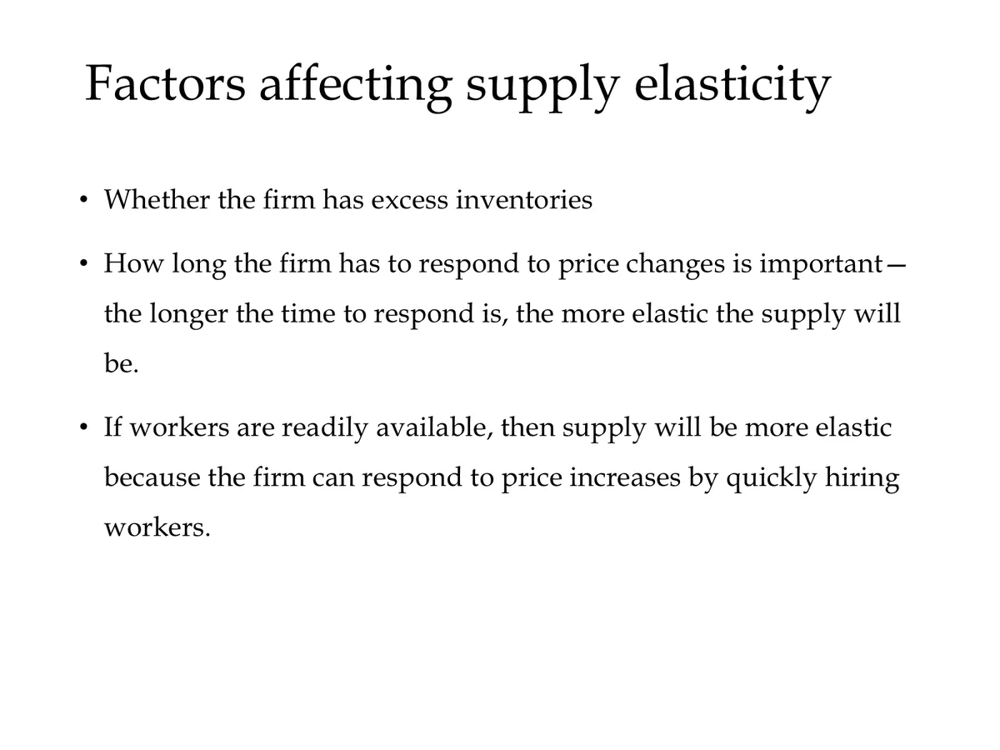
哪些因素决定供给弹性的大小？课件给了三条：
- 有没有多余库存（excess inventories）：仓库里有现货，价格一涨马上能出货，弹性大。
- 有多少时间反应：时间越长，供给越有弹性。厂房可以扩建、设备可以添置，长期比短期灵活得多。
- 工人是否容易招到：劳动力市场宽松，企业能迅速扩产，弹性大；招不到人，价格再高也扩不了。
这三条和第 13 讲的「短期/长期」是同一件事的两种说法。
幻灯片原文 / 板书
Factors affecting supply elasticity --- Whether the firm has excess inventories How long the firm has to respond to price changes is important—the longer the time to respond is, the more elastic the supply will be. If workers are readily available, then supply will be more elastic because the firm can respond to price increases by quickly hiring workers.
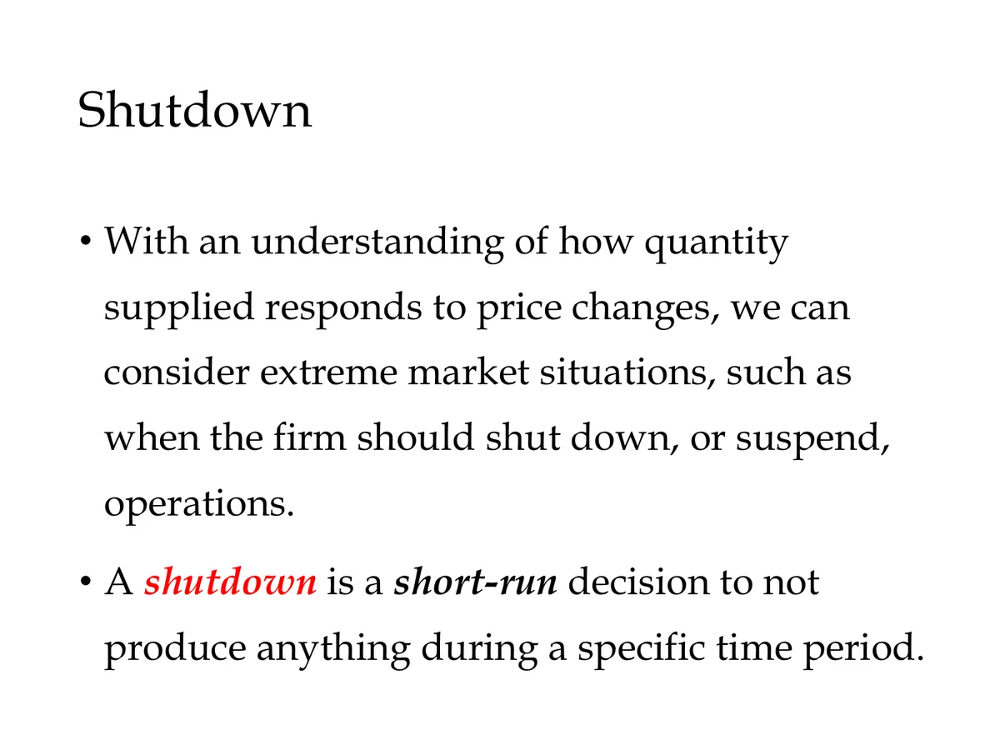
有了「供给量如何随价格变化」，就可以处理极端情形：什么时候该停业。
停业（shutdown）是一个短期决策：在某个时间段内什么都不生产。
注意两个限定词：
- 短期——厂房还在、合同还在，只是机器停转、工人放假。这和退出（exit，长期离开这个行业）不是一回事，退出在 P55 讲。
- 什么都不生产——不是减产，是产量归零。
停业时收益为零，但固定成本照付。所以问题变成：停业亏得多，还是硬撑着亏得多？
幻灯片原文 / 板书
Shutdown --- With an understanding of how quantity supplied responds to price changes, we can consider extreme market situations, such as when the firm should shut down, or suspend, operations. A shutdown is a short-run decision to not produce anything during a specific time period.
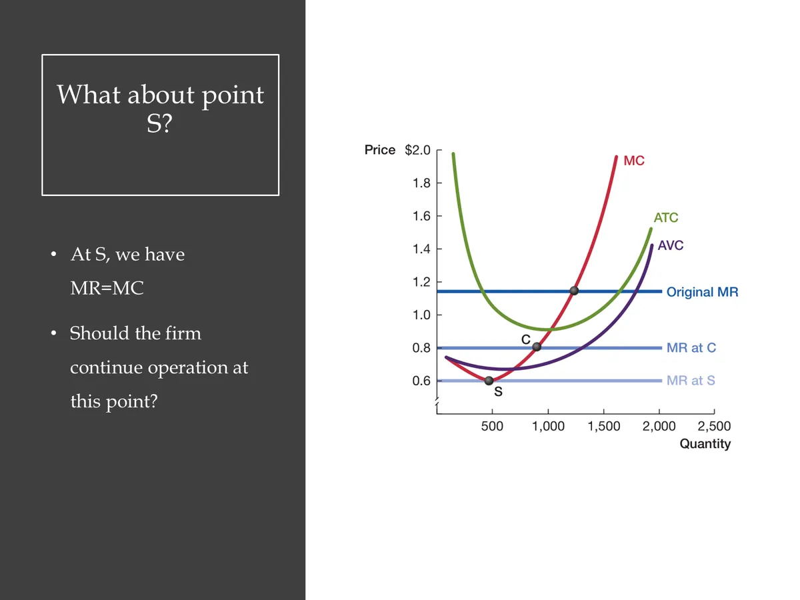
价格跌到 $0.60，MR 线降到最低那条。MR = MC 的交点是 S：Q = 500 箱。
按 MR = MC 的规则，这里确实是「最优产量」。但请看 S 的位置：它在 AVC 曲线最低点（$0.65）之下。
这意味着什么？每卖一箱收 $0.60，而生产这一箱的可变成本就要 $0.65 以上——卖一箱亏一箱，连工资都发不出来。继续生产只会让亏损比固定成本还大。
所以答案是：不该继续经营，应该停业。规则是「P < min AVC 就停业」。
幻灯片原文 / 板书
What about point S? --- At S, we have MR=MC Should the firm continue operation at this point?
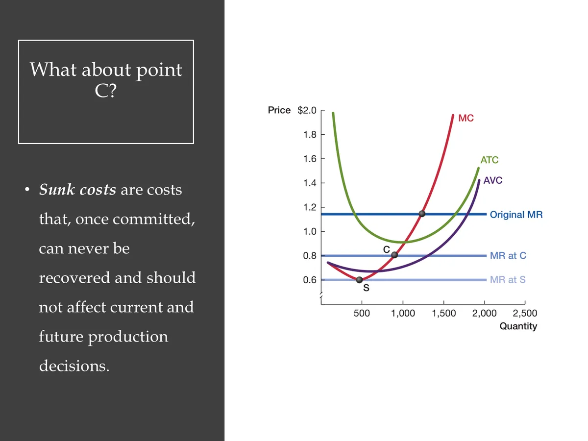
价格回升到 $0.80，交点是 C：Q ≈ 950 箱。这个位置在 min AVC（$0.65）之上、min ATC（$0.90）之下。
按 MR = MC，最优产量是 950 箱，但每一箱都在亏钱（P < ATC）。该不该停？不该。
理由是这一页的关键概念——沉没成本（sunk costs）：
沉没成本是一旦投入就再也收不回来的成本，不应该影响当前和未来的生产决策。
$200 的厂房租金已经花掉了，停不停业都收不回来。所以真正要比的是：收入能不能盖住可变成本。$0.80 > $0.65，每箱还能剩 $0.15 去补贴那 $200。生产，亏损小于 $200；停业，亏损正好 $200。
幻灯片原文 / 板书
What about point C? --- Sunk costs are costs that, once committed, can never be recovered and should not affect current and future production decisions.
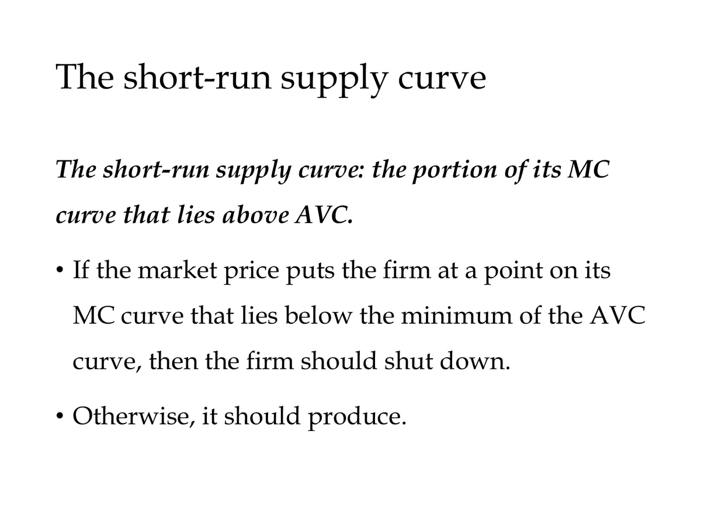
把 P41 和 P42 合起来，得到短期供给曲线的准确定义：
短期供给曲线 = MC 曲线上高于 AVC 的那一段。
规则写成两句：
- 若市场价让企业落在 MC 上低于 min AVC 的位置 → 停业，供给量为 0；
- 否则 → 按 P = MC 生产。
注意这条曲线在 min AVC 处断开：价格低于 $0.65 时供给量直接是 0，不是沿着 MC 继续往左下走。这一点是「生产与不生产无差异」的临界价格——刚好 P = min AVC 时，开工和停业的亏损都等于 $200。这是它和「整条 MC 曲线」的唯一区别。
幻灯片原文 / 板书
The short-run supply curve --- The short-run supply curve: the portion of its MC curve that lies above AVC. If the market price puts the firm at a point on its MC curve that lies below the minimum of the AVC curve, then the firm should shut down. Otherwise, it should produce.
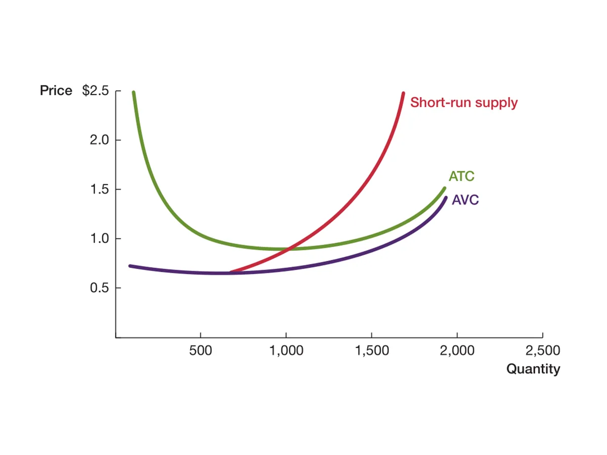
图上把答案画出来了：绿色的 ATC、紫色的 AVC、红色的 MC。
红色加粗的那一段，从 min AVC（$0.65）开始沿 MC 一路向右上延伸，标注为 Short-run supply。AVC 最低点以下的那一小截 MC 虽然存在，但不属于供给曲线——因为在那里企业宁可停产。
读图要点：短期供给曲线的起点是 min AVC，不是原点，也不是 min ATC。这条「起点」在 P54 会被长期条件替换成 min ATC。
顺带记住斜率的含义：MC 越陡，供给越不弹性——想多产一箱，成本就跳得很高。
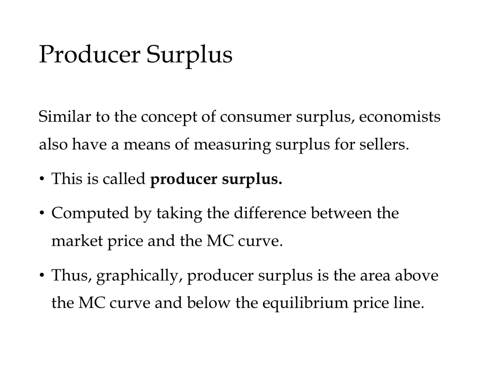
生产者剩余（producer surplus），与消费者剩余对称。
定义：市场价格与企业边际成本之间的差额，把所有卖出的单位加总。
为什么这是「剩余」？因为 MC 是「卖这一箱至少要收到多少才不亏」的心理底价。实际收到 $2.00，而这一箱的成本只有 $0.60，多出来的 $1.40 就是白赚的。
图形上：
生产者剩余 = MC 曲线之上、市场价格线之下的面积。
一个常见混淆：生产者剩余不是利润。PS 只减了可变成本（MC 的加总），没减固定成本；利润 = PS − FC。所以 PS 可能为正而利润为负，P42 的 C 点就是。
幻灯片原文 / 板书
Producer Surplus --- Similar to the concept of consumer surplus, economists also have a means of measuring surplus for sellers. This is called producer surplus. Computed by taking the difference between the market price and the MC curve. Thus, graphically, producer surplus is the area above the MC curve and below the equilibrium price line.
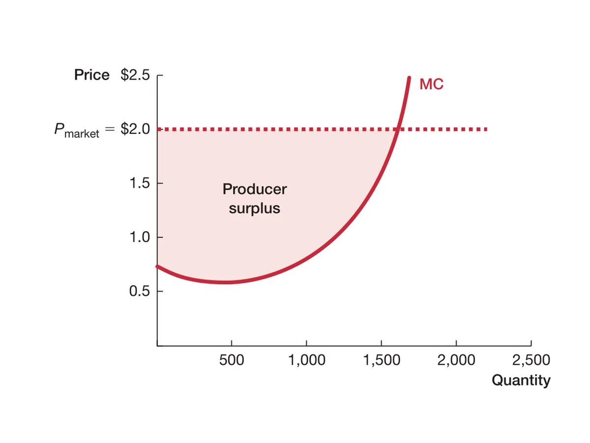
图上：横轴 0–2,500 箱，纵轴 $0.5–2.5，红色 MC 曲线，虚线标出 P_market = $2.0。
粉红色阴影就是生产者剩余——它从纵轴开始，上边界是 $2.0 的水平虚线，下边界是 MC 曲线，右边界是 MC 与价格线的交点（约 1,700 箱）。
注意这块面积不是矩形而是曲边三角形：每一箱的成本都不一样，前面的箱子成本低、剩余大，越往后剩余越小，到交点处剩余归零。若 MC 是水平线，这块面积才退化成矩形。
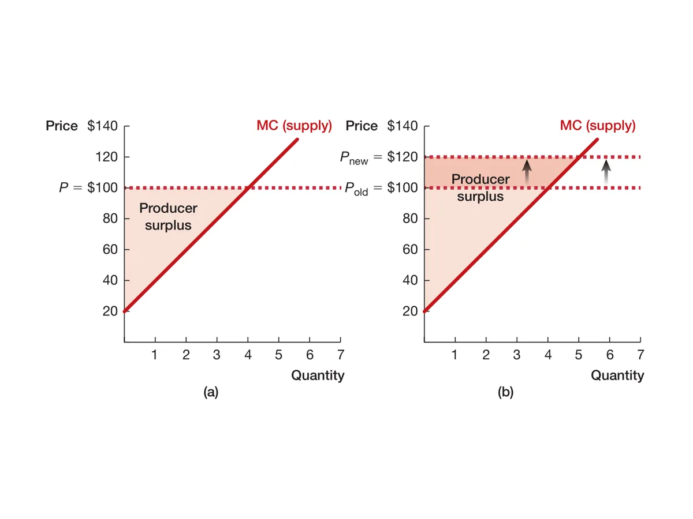
价格从 $100 涨到 $120，生产者剩余怎么变？两幅图对照：
- (a) P = $100：阴影是 MC 线之上、$100 之下的三角形，销量到 4 单位。
- (b) P = $120：阴影明显变大，多出两块——原来那些单位现在每单位多赚 $20（原面积上方加的一条），以及新进入的、成本在 $100 到 $120 之间的单位也带来了剩余。
这正是 P59 要讲的机制在厂商层面的版本：价格上升 → 供给量增加 → 生产者剩余增加。第 5 讲算社会总福利时，这块面积会和消费者剩余一起被加总。
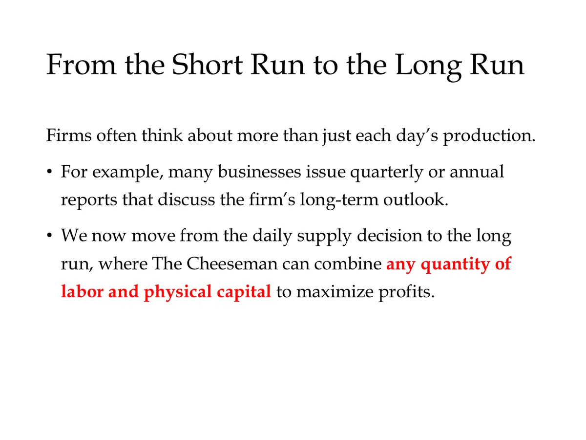
从短期走向长期。
课件提醒：企业不会只盯着今天的产量，它们发季报、年报，讨论的是长期前景。
现在 The Cheeseman 可以任意组合劳动和物质资本来最大化利润——不只决定雇几个人，还决定厂房多大。
从建模角度说，这一页把「厂房规模」从参数变成了选择变量。凡是一个量从给定变成可选，最优值只会更好——这就是长期成本更低的根源。
幻灯片原文 / 板书
From the Short Run to the Long Run --- Firms often think about more than just each day’s production. For example, many businesses issue quarterly or annual reports that discuss the firm’s long-term outlook. We now move from the daily supply decision to the long run, where The Cheeseman can combine any quantity of labor and physical capital to maximize profits.
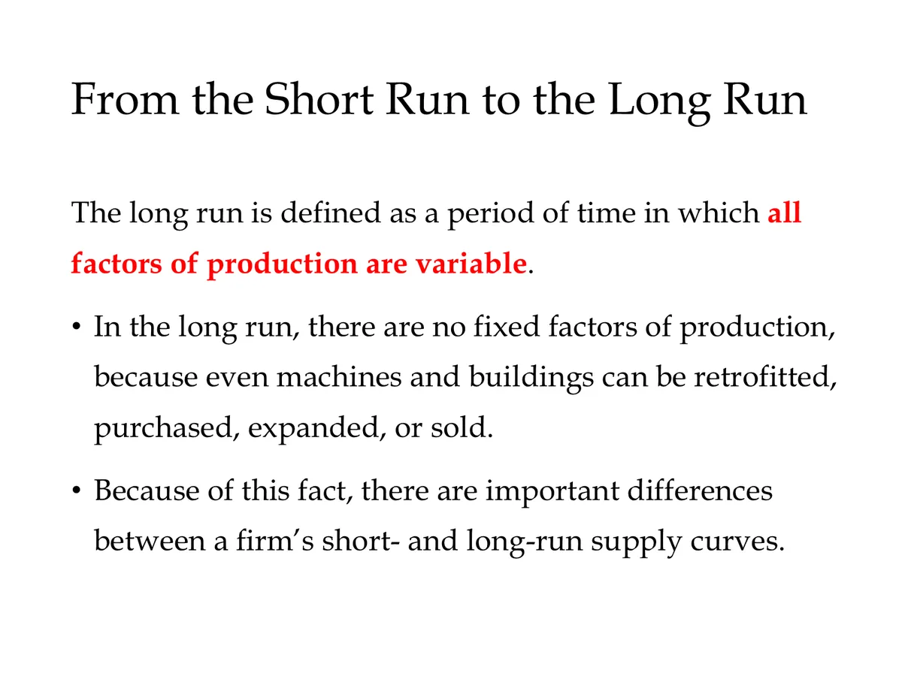
长期的定义再强调一次：
长期 = 所有生产要素都可变的时间段。
课件补了一句很关键的话：长期里没有固定投入，因为机器和厂房可以改造、购买、扩建、出售（retrofitted, purchased, expanded, sold）。
所以长期和短期的差别不只是「时间更久」，而是决策变量更多：短期只能调 L，长期能同时调 L 和 K。决策变量一多，成本曲线的位置就会变——这就是下一页的主题。
幻灯片原文 / 板书
From the Short Run to the Long Run --- The long run is defined as a period of time in which all factors of production are variable. In the long run, there are no fixed factors of production, because even machines and buildings can be retrofitted, purchased, expanded, or sold. Because of this fact, there are important differences between a firm’s short- and long-run supply curves.
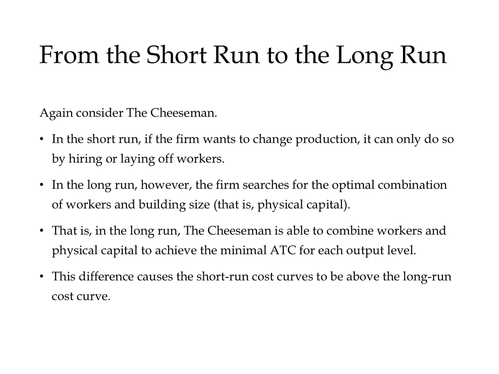
这一页给出短长期成本曲线的位置关系：
- 短期：想改产量，只能靠增减工人，厂房锁死。
- 长期：可以同时挑工人数和厂房规模，为每个产量水平选出平均成本最低的那套组合。
结论：
短期成本曲线在长期成本曲线之上。
为什么？因为长期的选择集包含短期的选择集。短期你被厂房绑住，只能在一条 ATC 上移动；长期你可以换厂房，总能找到不更差的那一条。约束越少，成本越低。
幻灯片原文 / 板书
From the Short Run to the Long Run --- Again consider The Cheeseman. In the short run, if the firm wants to change production, it can only do so by hiring or laying off workers. In the long run, however, the firm searches for the optimal combination of workers and building size (that is, physical capital). That is, in the long run, The Cheeseman is able to combine workers and physical capital to achieve the minimal ATC for each output level. This difference causes the short-run cost curves to be above the long-run cost curve.
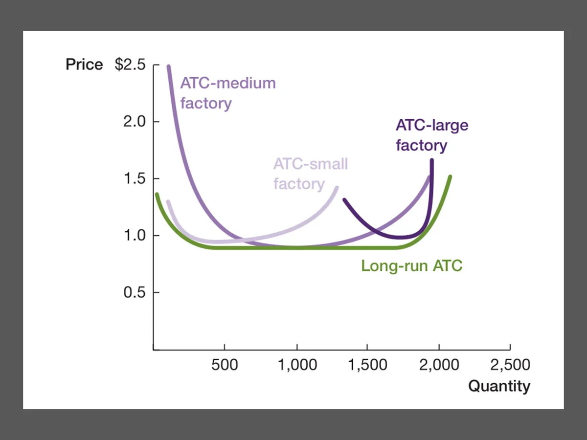
长期 ATC 的下降段有专门的名字：规模经济（economies of scale）。
产量增加时 ATC 下降，就是规模经济。
机制：厂房、设备、管理人员这些都是「一大块」投入，产量小时摊不薄；产量扩大后，同样的管理团队管更多生产线，单位成本就下来了。大厂买原料还更便宜、贷款利息更低。
这一段是后面第 12 讲「自然垄断」的伏笔：如果一个行业的长期 ATC 一路下降到底，最后只会剩下一家企业——因为大厂永远比小厂便宜。
幻灯片原文 / 板书
From the Short Run to the Long Run --- In this example the long-run ATC curve has a pronounced U-shape. On the downward portion of the U, ATC decreases as output increases. When this happens, we say that there is economies of scale.
补完长期 ATC 的另外两段：
- 规模报酬不变（constant returns to scale）：产量变化时 ATC 不变。U 形的底部就是这一段，很平。
- 规模不经济（diseconomies of scale）：产量增加时 ATC 上升。规模太大，管理层级变多、信息传递变慢、协调成本上升，把规模优势吃掉了。
三段合起来就是长期 ATC 的 U 形：先降（规模经济）→ 平（不变）→ 升（不经济）。注意这三段讲的都是长期，短期 U 形的成因（固定成本摊薄 + 边际报酬递减）完全不同，别混。
幻灯片原文 / 板书
Economies of scale --- Constant returns to scale exist when ATC does not change as the quantity produced changes. Diseconomies of scale occur when ATC rises as the quantity produced increases.
回到具体决策。图 (b) 中，价格落在 A 点：约 $0.70，位于 MC 曲线上，但低于 min ATC（$0.90）。
课件问：这个价格下该生产吗？答案是——
除了退出这个行业，The Cheeseman 别无选择，因为它无法在均衡价格下盈利地存在。
注意这里用的是「退出」（exit），不是「停业」（shutdown）。$0.70 > $0.65 = min AVC，短期硬撑还能收回可变成本；但长期连厂房的 $200 都收不回来，厂房到期就该卖掉走人。
对照 P41：$0.60 时立刻停业，$0.70 时短期开工、长期退出。同一个「低价」，两个时间尺度给出两个答案——这是本讲最容易被考的对比。
幻灯片原文 / 板书
Long-Run Supply Curve --- Consider point A. Should The Cheeseman produce at this price? There is really no choice for Cheeseman but to exit the industry, because it cannot profitably exist at the equilibrium price.
正式的长期决策规则：
退出（exit）= 长期离开市场。
>
若 P < ATC，就退出；等价地，若 TR < TC，就退出。
和 P43 的短期规则对照记：
| 短期 | 长期 | |
|---|---|---|
| 决策 | 停业 shutdown | 退出 exit |
| 门槛 | P < min AVC | P < min ATC |
| 逻辑 | 固定成本已沉没 | 固定成本也能躲开 |
差别就在「固定成本能不能躲」。短期躲不掉，所以只看可变成本；长期连厂房都能卖掉，所以要看全部成本。当 P = min ATC 时企业恰好不赚不亏，那正是长期均衡的状态（P63 的 E 点）。
幻灯片原文 / 板书
Long-run decision rule --- Exit is a long-run decision to leave the market. The long-run decision rule: Exit if price is less than ATC or, likewise, if total revenue is less than total cost.
从单个企业走向整个行业。
课件说：和单个企业的短期/长期之分一样，行业层面也有短期和长期的关键区别。接下来的几页要回答一个更大的问题：当所有企业都能自由进出时，市场价格会被压到哪里？
顺序是：先把单个企业的决策规则定下来（P40–P55），再把它乘以企业数目得到市场供给（P59–P64），最后看企业数目本身如何被利润调节（P57）。
幻灯片原文 / 板书
From the Firm to the Market: Long-Run Competitive Equilibrium --- Much like the short- and long-run analyses for the individual firm, at the industry level there are critical distinctions between the short run and the long run.
行业层面的主要区别只有一句：
短期内，行业里的企业数目是固定的；长期内，企业可以根据盈利状况进入或退出。
原因还是那句：长期里它们能同时调整劳动和物质资本，因此能真正搬进来或搬出去。
请把「企业数目可变」这五个字看成本页的核心——它是唯一一个能让市场供给曲线整体移动的因素。单个企业改产量是沿着曲线走，企业进出是把曲线搬走。
幻灯片原文 / 板书
From the Firm to the Market: Long-Run Competitive Equilibrium --- The primary difference Even though the number of firms in the industry is fixed in the short run, in the long run, firms can enter or exit the industry in response to changes in profitability. This is again because in the long run, they have the ability to change both labor and physical capital.
自由进入（free entry）的定义：
当一个行业的进入不受任何特殊的法律或技术障碍限制时，我们说存在自由进入。
「不受限制」是关键词。要执照、要特许经营、要专利授权、要巨额初始投资（比如建芯片厂），都不算自由进入。
这是完全竞争三条假设里的第三条，也是「长期利润为零」这个结论唯一的支柱。没有自由进入，超额利润就会一直留在行业里。
幻灯片原文 / 板书
Free entry --- There is free entry into an industry when entry is unfettered by any special legal or technical barriers.
自由进入的第一步机制：它让市场供给曲线右移。
推理链：
- 市场供给曲线是所有单个企业供给曲线的加总；
- 新企业进来，等于在每一个价格上都多了一批供给量；
- 所以在任意给定价格下，行业提供的数量更多；
- 图形上就是市场供给曲线向右移动。
注意「向右」这个词的精确含义：不是价格变了，是同一价格对应的数量变多。这是「供给量变动」与「供给变动」的经典区别。
幻灯片原文 / 板书
free entry --- First, think about what entry of new firms does to the market supply curve. Because the market supply curve is the summation of individual firms’ supply curves, adding new firms causes the industry to provide higher quantity at any given price. In other words, entry shifts the market supply curve to the right.
这一页就是那句结论的图：Entry shifts the market supply curve to the right（进入使市场供给曲线右移）。
图上纵轴价格、横轴数量。原来的供给曲线 S1 在左，新的 S2 在右，水平方向上整条搬过去，两者之间的水平距离就是新进入企业带来的新增供给量。
移动之后，S2 与需求曲线 D 的新交点比原交点更低、更靠右——价格下降、成交量上升。价格为什么会降？下一頁给答案。
幻灯片原文 / 板书
Entry shifts the market supply curve to the right
为什么进入会让价格下跌？课件把推理逐步写出来：
- 完全竞争行业的价格，由市场需求与市场供给的交点决定；
- 供给曲线右移，沿同一条需求曲线向下滑；
- 所以市场均衡价格下降；
- 而竞争企业是价格接受者，它只能接受这个更低的价格。
注意这里没有「企业降价竞争」这回事——没有哪家企业主动降价。价格下跌是市场层面的加总结果，单个企业只是被动接受。这一点想清楚，就理解了「价格接受者」的真正含义。
幻灯片原文 / 板书
The effect of free entry --- This shift will cause the market price to fall. Why? We know that the market price in a perfectly competitive industry is determined by the intersection of the market demand and market supply curves A shift to the right of the market supply curve lowers the market price Firms in the competitive market are price-takers.
现在把镜头对准一个准备进入的新企业：Steve's Wholesale，它与 The Cheeseman 完全相同（同样的成本曲线）。
当市场价还是 $1.13 时，它的利润矩形（价格线在 ATC 最低点之上那一段）面积大于零——也就是说，进来就有钱赚。
于是它进来了。课件特别强调「identical」这个词：正因为两家企业成本一样，新进入者不需要任何特殊优势，只要价格高于 min ATC，进入就是划算的。
这就是进入的动机：正的利润本身就是邀请函。
幻灯片原文 / 板书
Firm Entry
进入之后发生了什么？两幅图对照：
- (a) 市场：供给从 S1 右移到 S2，均衡从 A 滑到 B，价格从 $1.13 跌到 $0.90。
- (b) 企业：MR 线从 MR1 下移到 MR2 = $0.90，与 MC 交于 E 点。
$0.90 是什么数？正好是 min ATC。在 E 点，价格线相切于 ATC 的最低点，利润矩形消失——不赚不亏。于是新企业失去进入动机，进入停止，这就是长期均衡。
读图提醒：这张图的横轴单位是千箱，与企业成本表（以箱计）的刻度不同，教材在这里换了一家规模更大的厂来画，只看相对位置，不要跨图对数字。
反向过程：退出。
- (a) 市场：需求曲线左移，价格从 A 点跌到 B 点，低于 min ATC；
- 亏钱的企业开始退出；
- 供给曲线随之左移，均衡移到 C 点，价格回升；
- (b) 企业：价格回到与 min ATC 相切的位置（E 点），亏损消失，退出停止。
把 P63 和 P64 并排记：进入把价格压到 min ATC，退出把价格抬到 min ATC，两边都是同一个吸引子。
再补一个观察：(a) 里价格从 A 跌到 B 是需求造成的，(b) 里从 B 回到 C 是供给造成的。冲击来源不同，恢复机制都是「企业数目调整」，所以长期价格不变、只有成交量变。
自由退出（free exit）的定义，与自由进入对称：
当一个行业的退出不受任何特殊的法律或技术障碍限制时，我们说存在自由退出。
现实里的障碍：长期租约、裁员补偿、设备只能贱卖、政府不让关停。这些都会让亏损企业走不掉，于是价格无法回升，行业长期卡在亏损状态。
考点：自由进入决定利润会不会被抹平，自由退出决定亏损会不会被抹平。两个都要有，长期均衡才成立。
幻灯片原文 / 板书
Firm Exit --- There is free exit from an industry when exit is unfettered by any special legal or technical barriers.
长期供给曲线的形状：一条水平线。
课件把「为什么」写得很干脆：
- 价格总会回到 min ATC；
- 而 min ATC 是一个常数（技术给定，不随行业规模变化）；
- 所以长期里价格恒定。
水平线意味着：长期供给完全弹性（εS = ∞）。不管需求把成交量推到多大，价格都钉在 $0.90——产量可以无限扩张，但一分钱也涨不上去。这就是 P36 那条水平供给曲线的现实版本。
幻灯片原文 / 板书
The long-run supply curve --- Is a horizontal line…… Why? Prices always return to the minimum ATC, but the minimum ATC is a constant Prices remains constant in the long run
Exhibit 6.18 用三个面板把整条逻辑串起来：
- (a) 需求从 D1 右移到 D2，沿原供给 S 把价格从 P1 推到 P2。
- (b) 高价引来进入，供给从 S1 右移到 S2，价格被压回 P1，成交量从 Q2 扩到 Q3。
- (c) 把两次移动叠起来，得到水平的 S_long-run：价格永远是 P1 = min ATC。
课件特别澄清一个易错点：(b) 里的 S1 已经不是长期市场供给曲线，它只是在位企业（incumbent firms）的供给；真正的长期供给要取 S2 与 D2 的交点。水平线才是长期供给曲线。
幻灯片原文 / 板书
S1 in figure b is no longer the long run market supply curve. It is only the supply of the incumbent firms, i.e., firms that are already in the market The new market supply equals to the point in S2 where S2 intersect with D2
最后一个问题，也是学生最不服气的一个：长期利润为零，那还创什么业？
课件的设问很生动：如果你从企业家的角度想，进入和退出把利润压到零，是不是很绝望？既然如此，何必开公司？
这个疑问来自一个混淆：把经济利润当成了会计利润。接下来两页把这两个概念分开——这是全讲的收尾，也是第 1 讲「机会成本」的回归。
幻灯片原文 / 板书
Economic Profit Versus Accounting Profit --- If you’re thinking from an entrepreneur’s perspective, maybe the zero-profit implication of firm entry and exit makes you despair. After all, why even try to start a business if the end result will be profitless?
为什么不必绝望？因为经济利润不等于会计利润。
经济利润为零，只意味着：你把才能挪到别的行业，也不会赚得更多。
说白了，你至少拿到了自己时间的机会成本。一个厨师开奶酪厂，经济利润为零，意思是他的收入正好等于他去当厨师能拿的工资——他没有白干，只是没有超额回报。
所以「零利润」不是「不赚钱」，而是「赚的正好是你在别处也能赚到的钱」。经济学意义上的「正常利润」已经包含在成本里了。
幻灯片原文 / 板书
Economic Profit Versus Accounting Profit --- Why you shouldn’t think this way: Economic profits are not the same as accounting profits. As a business owner, when economic profits are zero, it simply means that you cannot earn more money if you take your talents to a different industry—you are being paid at least your opportunity cost of time.
最后一页给出反例，把两个概念彻底分开。
假设 The Cheeseman 如果把资源转去做快餐仓储（fast-food storage），利润会大幅提高。这时：
- 会计利润：奶酪装箱这门生意可能是正的——账面上收入减支出还有剩。
- 经济利润：是负的——因为还差一块。
差的那块叫隐性成本（implicit costs）：管理时间的机会成本和厂房的机会成本。
经济利润 = 收入 − 显性成本 − 隐性成本
和工资一样，这笔隐性成本必须从收入里扣掉，才是经济学家眼里的利润。所以「会计上赚钱、经济上亏钱」的生意到处都是——它意味着你的资源被错配了。这也是第 1 讲那个问题的答案：成本从来不只是账单上的数字。
幻灯片原文 / 板书
Assume that The Cheeseman could increase its profits considerably if it decided to shift from the cheese-packing industry to the fast-food storage business. In such a case, accounting profits of cheese packing might indeed be positive, whereas economic profits are negative. This is because the implicit costs of cheese packing—the opportunity cost of management time and plant—must be considered. Much like the cost of labor, this implicit cost is subtracted from revenues to produce the economist’s conception of profits --- Economic Profit Versus Accounting Profit